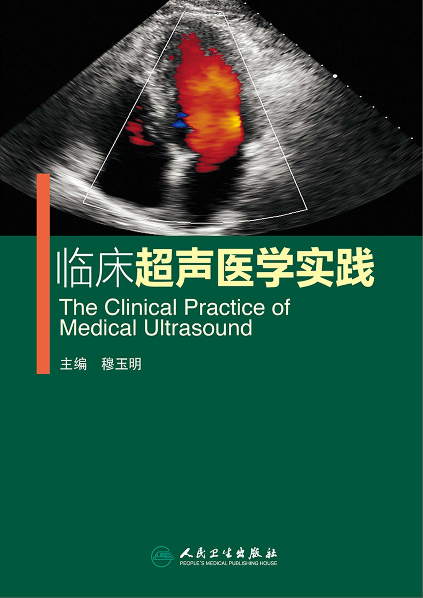
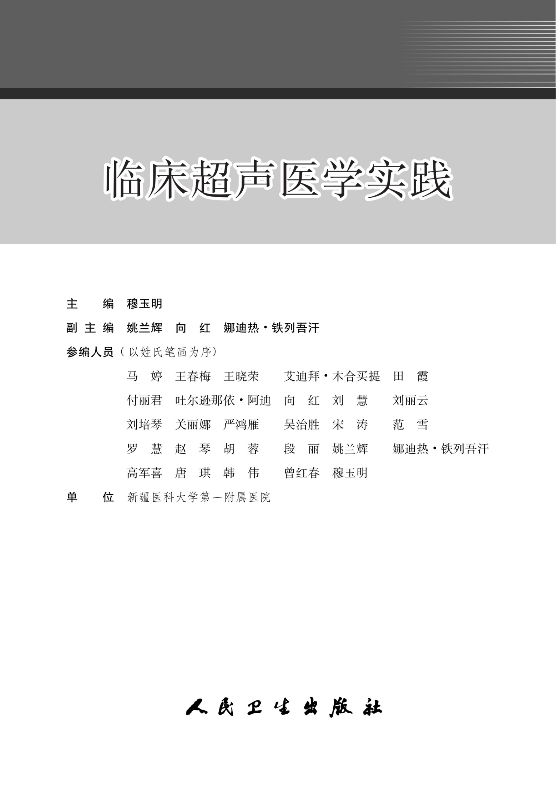
版权页
图书在版编目(CIP)数据
临床超声医学实践/穆玉明主编．—北京:人民卫生出版社，2015
ISBN 978-7-117-20935-9
Ⅰ.①临… Ⅱ.①穆… Ⅲ.①超声波诊断 Ⅳ.①R445.1
中国版本图书馆CIP数据核字(2015)第143275号
人卫社官网 www.pmph.com 出版物查询，在线购书
人卫医学网 www.ipmph.com 医学考试辅导，医学数据库服务，医学教育资源，大众健康资讯
版权所有，侵权必究!
临床超声医学实践
主 编： 穆玉明
出版发行： 人民卫生出版社有限公司
人民卫生电子音像出版社有限公司
地 址： 北京市朝阳区潘家园南里19号
邮 编： 100021
E - mail： ipmph@pmph.com
制作单位： 人民卫生电子音像出版社有限公司
排 版： 人民卫生电子音像出版社有限公司
制作时间： 2018年1月
版 本 号： V1.0
格 式： mobi
标准书号： ISBN 978-7-117-20935-9
策划编辑： 刘艳梅
责任编辑： 卢冬娅
打击盗版举报电话：010-59787491 E-mail：WQ@pmph.com
注：本电子书不包含增值服务内容，如需阅览，可购买正版纸质图书。
主编简介
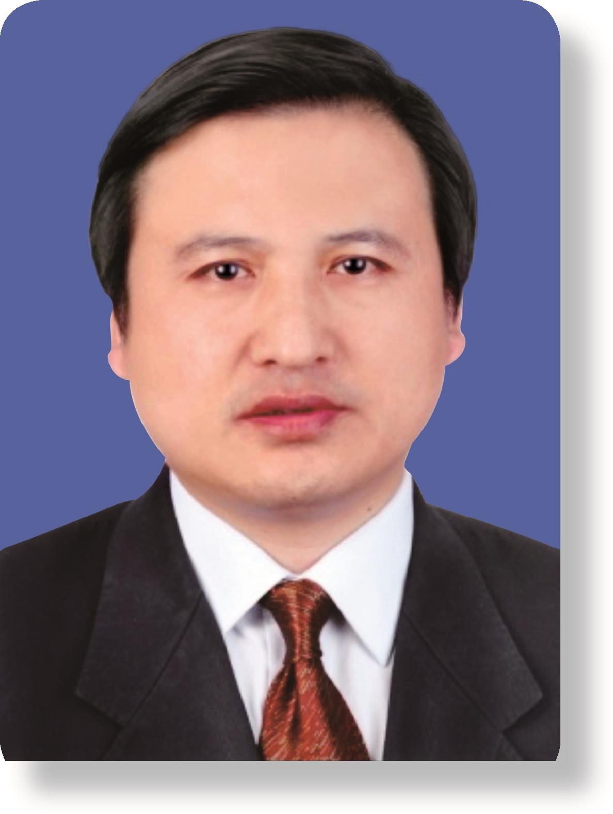
穆玉明 教授、主任医师、医学博士、博士生导师，享受国务院特殊津贴，自治区突出贡献专家，2013年被评为自治区“天山英才”。现任新疆超声医学工程学会会长，新疆医学会超声专业委员会主任委员，新疆维吾尔自治区超声质控中心主任，新疆维吾尔自治区临床超声医学研究所所长，新疆医科大学及新疆医科大学第一附属医院学科带头人、教学名师。
主要学术任职:中国超声医学工程学会常委及超声心动图专业委员会副主任委员，中华医学会超声医学分会常委;中国医师协会超声医师分会常务委员，中国医学影像技术研究会超声分会常务委员，海峡两岸医药卫生交流协会超声医学专家委员会常委，全国大型医用设备使用人员上岗资格考试专家委员会命题组专家，中国超声医师网“百家讲坛”专家讲师团成员。《中华超声影像学杂志》等多种核心期刊的编委。
主要研究领域:心血管超声诊断、超声监测下介入治疗和分子影像学的临床及科研工作。承担国家自然科学基金5项、省部级6项等十余项项目，先后获自治区科技进步二、三等奖，新疆医学科技二等奖、三等奖等共6项，乌鲁木齐市青年科技奖、自治区优秀科技工作者、医学科技之星等奖项。在国内外核心期刊发表包括被SCI收录的论文及专著160余篇，主编和参编专著6部。
前 言
《临床超声医学实践》是《临床超声医学》的姊妹篇。此书的特色在于重点突出超声医学实践操作技能的教学与培训。内容涵盖检查前的准备、超声操作方法、常用切面的显示及难点解析。从实践的角度出发，对各脏器标准超声切面的显示、手法的技巧，以及难点及容易产生的误诊进行了详细的解析;对典型病例进行了超声影像图像特色分析。内容简明扼要，配有声像图及示意图，使初学者参照其相应部分即可获得大量信息，起到了规范实践操作技能、快速入门、迅速提高的作用。
本书是一部实用的工具书，适用于医学影像及临床专业医生，并且有助于初学者、影像专业学生、临床工作者提高超声诊断操作技能及诊断水平。
穆玉明
2015年5月1日
目录
第一章 超声波的物理性质
超声波是频率高于20kHz的声波。医用诊断超声的声波范围在2M～10MHz。
超声波产生的基本原理就是使用压电晶体作为超声探头的主要部件，利用压电效应使探头同时作为超声波的发生器和接收器，当超声波在介质中传播时，将在声阻不同的界面发生反射，反射波返回探头时，声压作用于压电晶体，使晶体表面产生正、负电荷并随着反射波压强的变化出现交变电压，其频率等于反射波的频率，将此电信号加以放大并显示在荧光屏上，即形成超声心动图。
超声波的反射是指超声波从一种介质传至另一种声阻抗不同的介质时，将在两种介质相交界的表面发生反射。
超声波的衍射和散射是指超声波在传播过程中遇到几何尺寸等于或小于其波长的反射物时，部分能量将绕过这一物体并继续向前传播，这种现象称为衍射。而剩余能量的超声波将以这一物体为中心向空间各个方向发生散射。
1.脉冲式多普勒
是由探头作为声源发射出一组超声脉冲波后，在选择性的时间延迟后即作为接收器接收反射的回声信号，并利用其频移成分组成灰阶频谱。
2.连续性多普勒
是使用双晶片探头，一个晶片连续发射脉冲波，另一个晶片连续接收反射的回声，因不受时间延迟的限制，故理论上连续多普勒的脉冲重复频率为无穷大，最大流速可测值取决于多普勒频移值的大小而无理论的限制性。
3.彩色多普勒
可显示血流流动的方向，即朝向探头方向流动的血流呈红色，背离探头方向流动的血流呈蓝色。流速快，则彩色信号明亮;流速慢，则彩色信号暗淡。彩色信号持续呈现的是静脉血流，彩色信号有规律的闪现的是动脉血流。夹角为90°时血流不能显示，流速过高超过极限会出现彩色信号混叠。
第二章 心脏超声检查的方法学
第1节 正常心脏超声图像
一、正常心脏超声图像
从体表检测心脏时会遇到很多影响超声波透入的组织和器官，因此，为使得超声波能直接透入心脏，获得较为真实、清晰的超声图像，有关心脏超声探测窗的体表位置如图2-1-1所示。
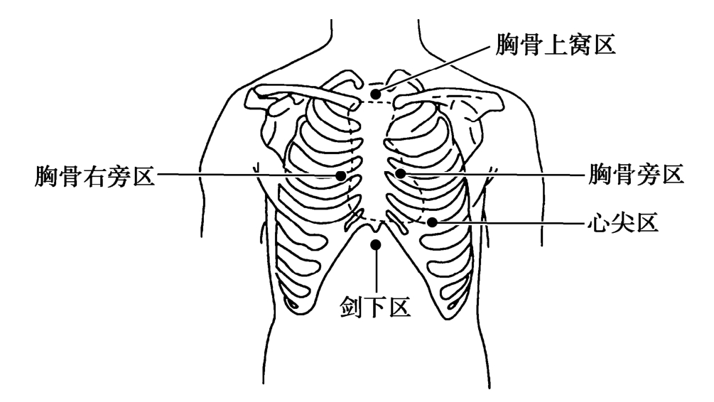
图2-1-1 心脏超声探测窗的体表位置
二、常规经胸超声切面
(一)胸骨旁常用标准切面图像
1.胸骨旁左心室长轴切面
探头位置常置于胸骨旁左缘第2～5肋间(多在第3～4肋间)，标准切面为主动脉与室间隔的结合点位于图像中线上，同时主动脉瓣右冠瓣与无冠瓣关闭线位于主动脉窦中间(图2-1-2)。
2.左心室短轴切面
在左心室长轴切面的基础上，顺时针将探头旋转90°，即为左心室短轴切面(图2-1-3)。
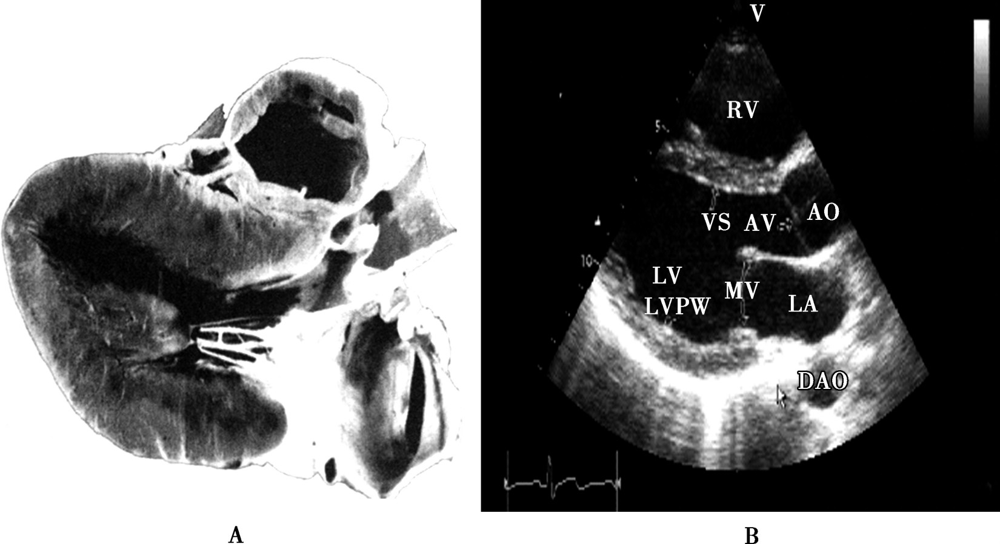
图2-1-2 左心室长轴切面
A.左心室长轴切面解剖示意图; B.左心室长轴超声切面图
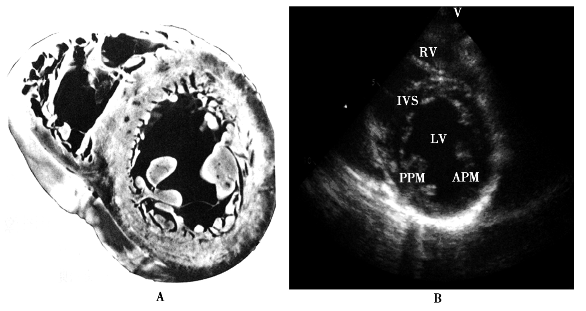
图2-1-3 左心室短轴切面
.左心室短轴切面乳头肌水平解剖示意图; B.左心室短轴切面乳头肌水平超声切面图
3.胸骨旁右心室流入道长轴切面
在左心室长轴切面的基础上，将探头指向右下(图2-1-4)。
4.主动脉根部短轴切面
在左心室长轴切面的基础上，向右上倾斜探头或者向右上水平移动探头(图2-1-5)。
5.胸骨左缘肺动脉长轴切面
在大动脉短轴切面的基础上，顺时针方向旋转，向头侧偏斜(图2-1-6)。
(二)心尖常用标准切面图像
1.心尖四腔心切面
在左心室长轴切面图像的基础上，沿左心室长轴向左下移动探头，到达心尖后顺时针旋转探头90°，同时向右上倾斜探头，即可获得此切面图像，注意标准图像一定要“横平竖直”(图2-1-7)。
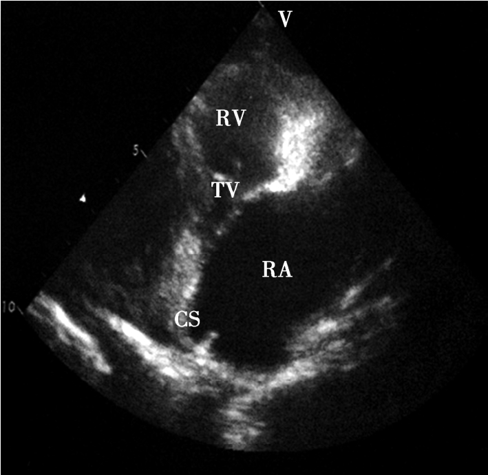
图2-1-4 胸骨旁右心室流入道长轴超声切面
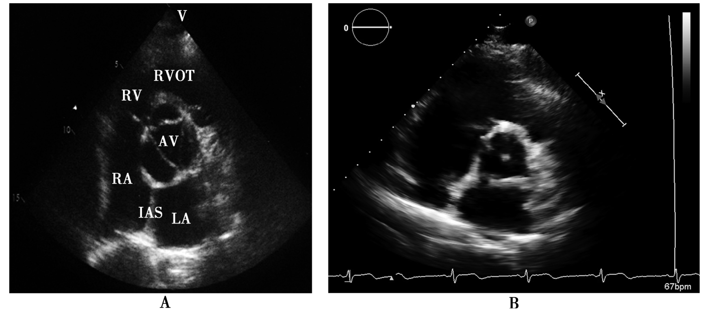
图2-1-5 主动脉根部短轴超声切面
A.主动脉瓣开放; B.主动脉瓣关闭
2.心尖五腔心切面
在心尖四腔心切面的基础上，再顺时针旋转探头约30°，即可获得此切面(图2-1-8)。
3.心尖两腔心切面
在心尖四腔切面的基础上，逆时针旋转探头约45°，稍向左侧倾斜探头即可显示该切面(图2-1-9)。
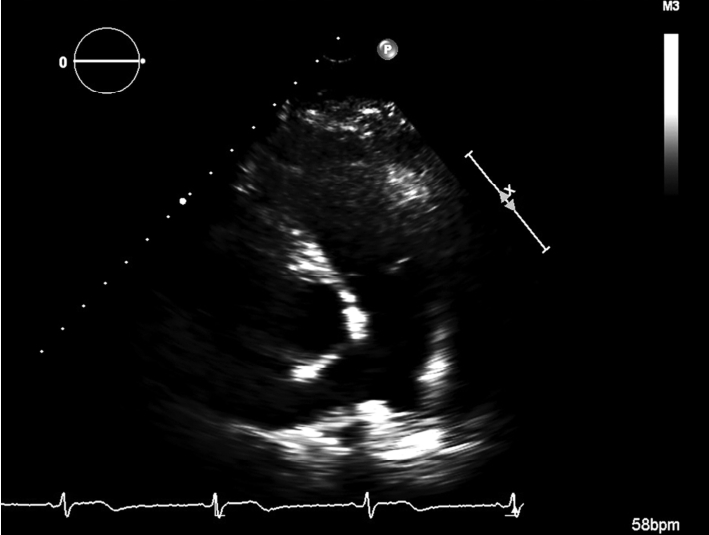
图2-1-6 胸骨左缘肺动脉长轴超声切面
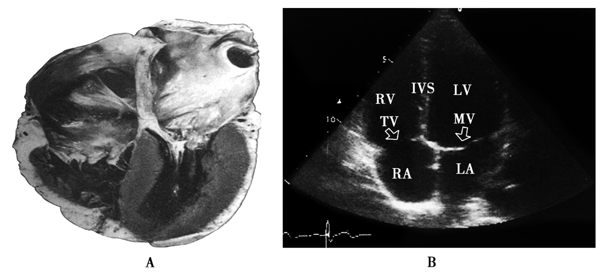
图2-1-7 心尖四腔心切面
A.心尖四腔心解剖示意图; B.心尖四腔心超声切面图
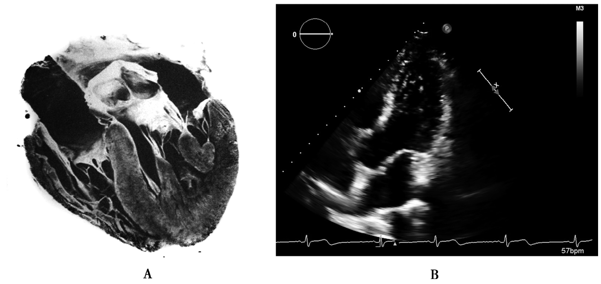
图2-1-8 心尖五腔心切面
A.心尖五腔心解剖示意图; B.胸骨旁心尖五腔超声切面图
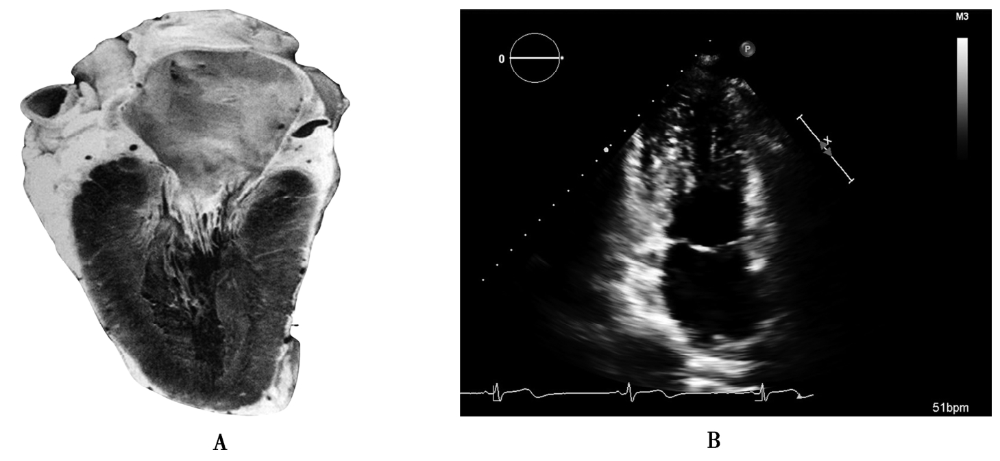
图2-1-9 心尖两腔心切面
A.心尖两腔观解剖示意图; B.胸骨旁心尖两腔观超声切面图
4.心尖左心室长轴切面
心尖左心室长轴切面扫查方向与胸骨旁左心室长轴基本相同，不同之处在于前者探头置于心尖部，而后者置于胸骨旁(图2-1-10)。
(三)胸骨上窝常用标准切面图像
1.胸骨上窝主动脉弓长轴切面
探头置于胸骨上窝，指向后下方心脏方向(图2-1-11)。
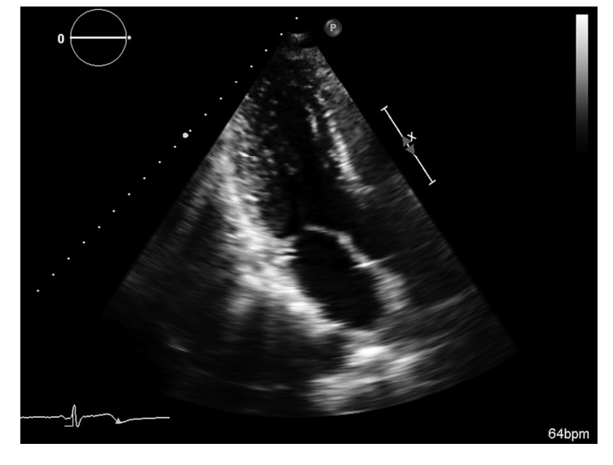
图2-1-10 心尖左心室长轴切面
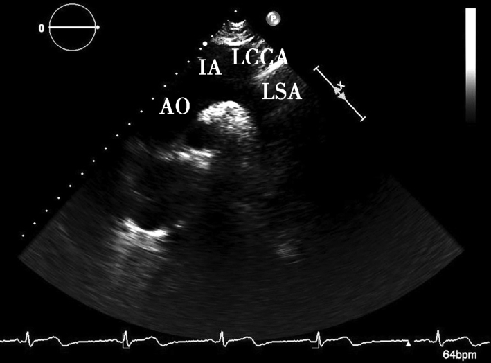
图2-1-11 胸骨上窝主动脉弓长轴切面
2.胸骨上窝主动脉弓短轴切面
在主动脉弓长轴切面的基础上，继续旋转探头90°，横切主动脉弓，此时接近冠状切面，可显示主动脉弓横切面、肺动脉干分叉处及右肺动脉长轴，调整探头方向，还可显示上腔静脉。
(四)剑突下常用标准切面图像
1.剑突下四腔心切面
探头置于剑突下方，使超声束水平经过心脏(图2-1-12)。
2.剑突下主动脉根部短轴切面
一般用于胸前区探查主动脉根部短轴切面，显示结构不理想的患者(图2-1-13)。
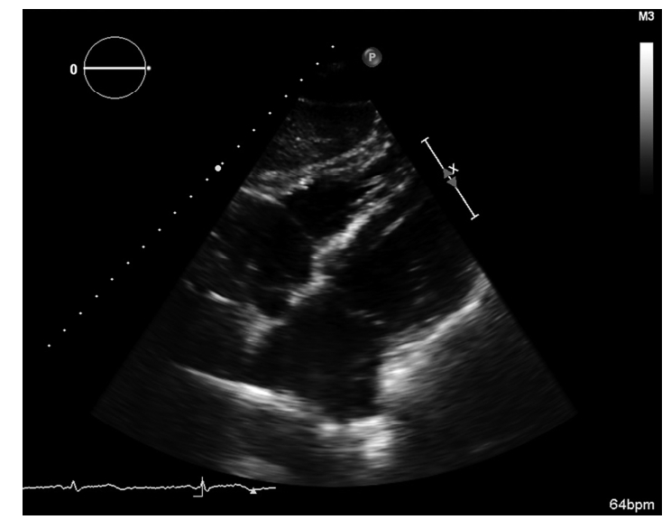
图2-1-12 剑突下四腔心切面
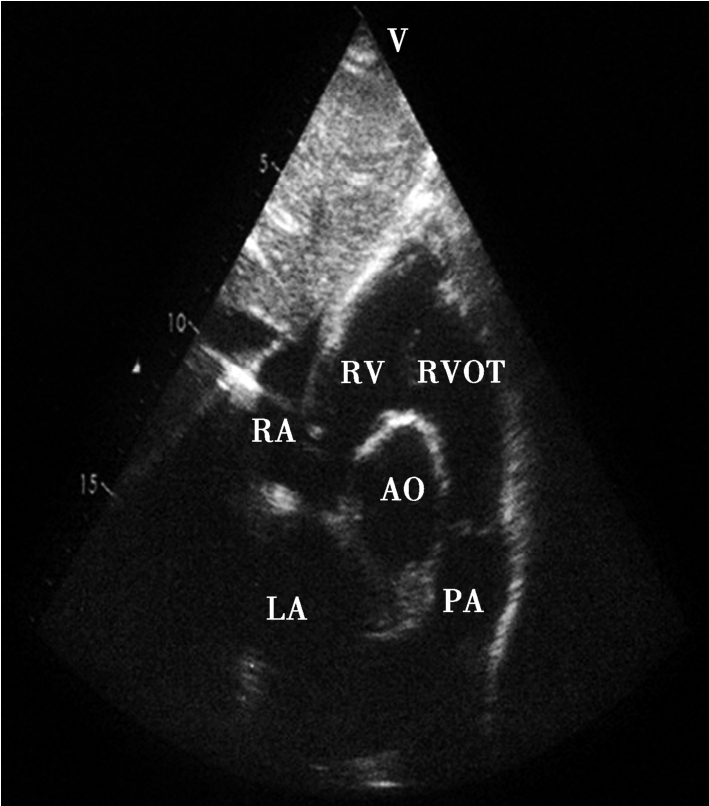
图2-1-13 剑突下主动脉根部短轴切面
3.剑突下下腔静脉切面
探头位置与剑突下四腔心切面基本相同，探头稍向下倾斜(图2-1-14)。
4.剑突下上、下腔静脉切面
在剑突下四腔心切面的基础上，逆时针旋转探头约90°，该切面主要显示右心房、房间隔、左心房及上下腔静脉(图2-1-15)。
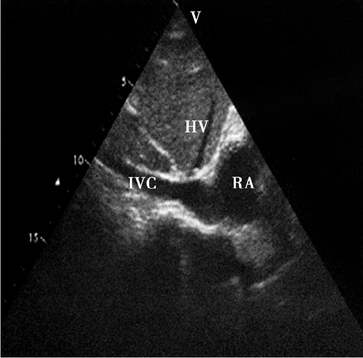
图2-1-14 剑突下下腔静脉切面
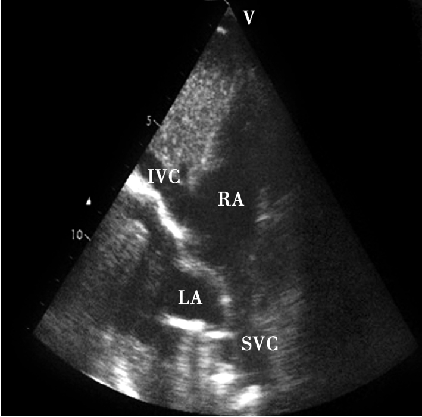
图2-1-15 剑突下上、下腔静脉切面
三、正常M型超声心动图
(一)主动脉根部波群
使用胸骨旁左心室长轴切面为标准切面，使M型超声心动图取样线通过主动脉根部，可显示出胸壁、右心室流出道前壁、右心室流出道、主动脉前壁、主动脉瓣、主动脉后壁、左心房、左心房后壁的M型曲线(图2-1-16)。
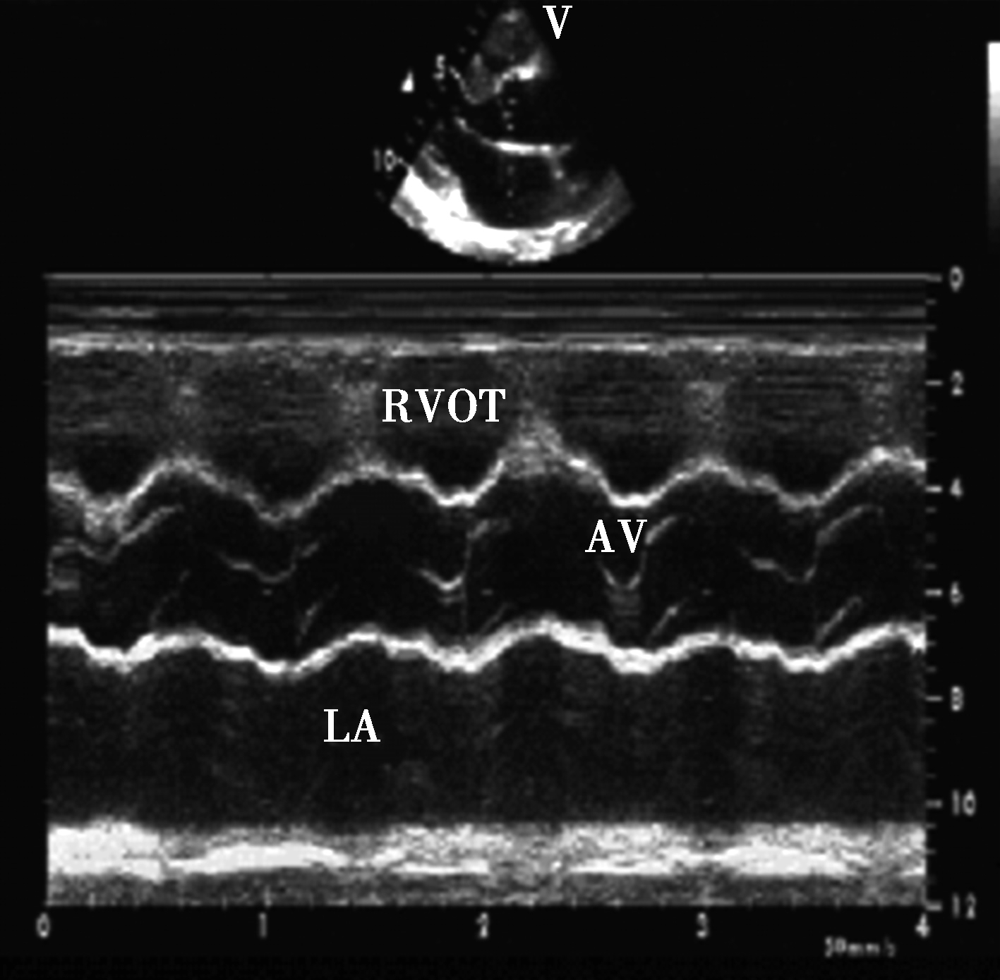
图2-1-16 主动脉根部M型曲线
(二)二尖瓣水平波群
同样采取以上标准切面，使M型超声心动图取样线移动至二尖瓣前瓣瓣尖水平即可(图2-1-17)。
(三)左心室波群
将M型超声心动图取样线移动至腱索水平。规范的M型超声测量切面可显示胸壁、右心室前壁、右心室、室间隔、左心室、左心室后壁(图2-1-18)。
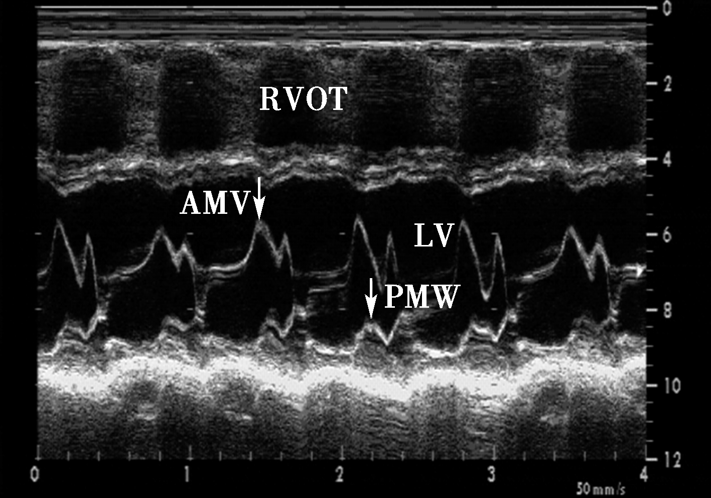
图2-1-17 左心室二尖瓣水平M型曲线
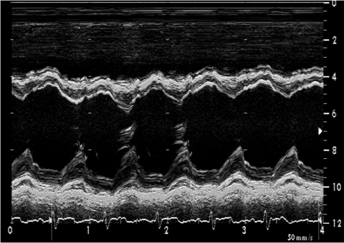
图2-1-18 左心室腱索水平M型曲线
四、正常各瓣口彩色血流多普勒
(一)二尖瓣彩色血流多普勒
采用心尖四腔心切面或胸骨旁左心室长轴切面作为标准探测切面，可见舒张期由左心房至左心室的红色血流(图2-1-19)。
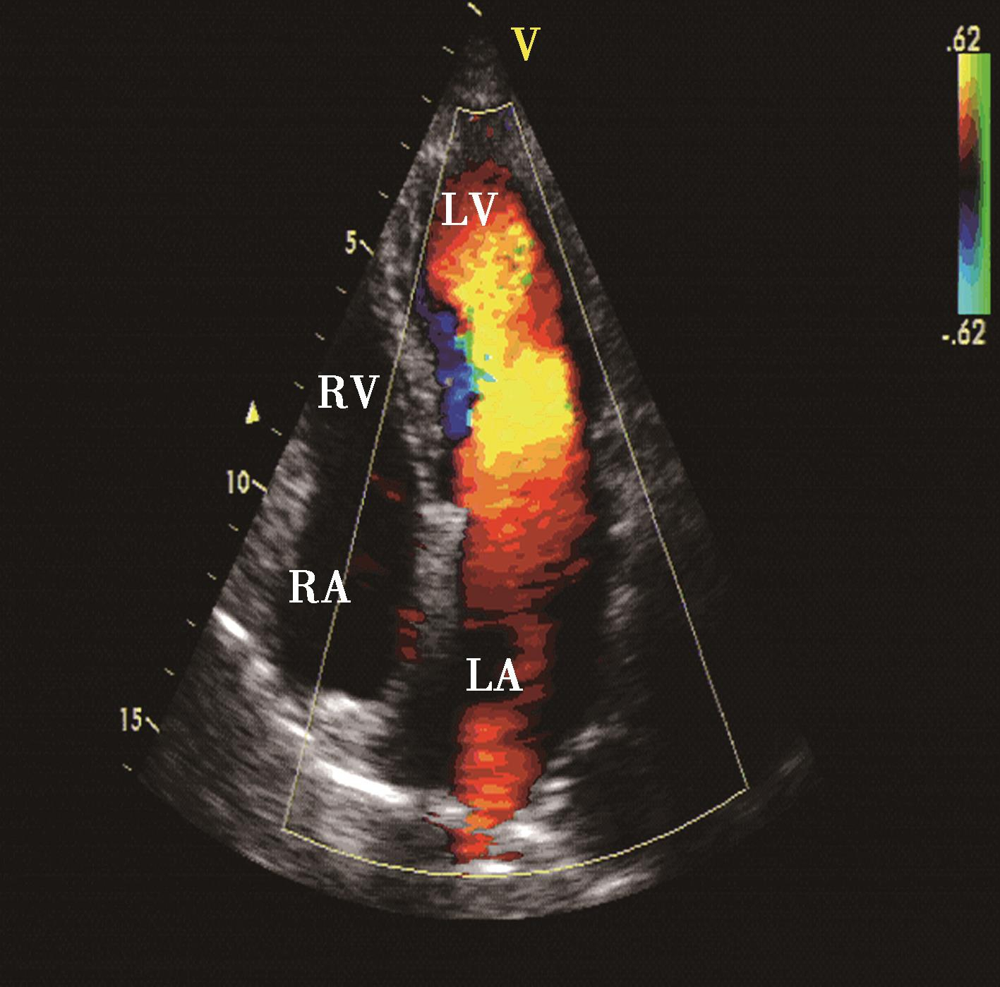
图2-1-19 二尖瓣口彩色血流多普勒
(二)三尖瓣彩色血流多普勒
采用心尖四腔心切面或胸骨旁左心室长轴切面作为标准探测切面，可见舒张期由右心房至右心室的红色血流(图2-1-20)。
(三)主动脉瓣彩色血流多普勒
五腔心切面上观察，瓣口血流总体显示为蓝色，若存在反流，可见瓣口出现舒张期红色反流束(图2-1-21)。
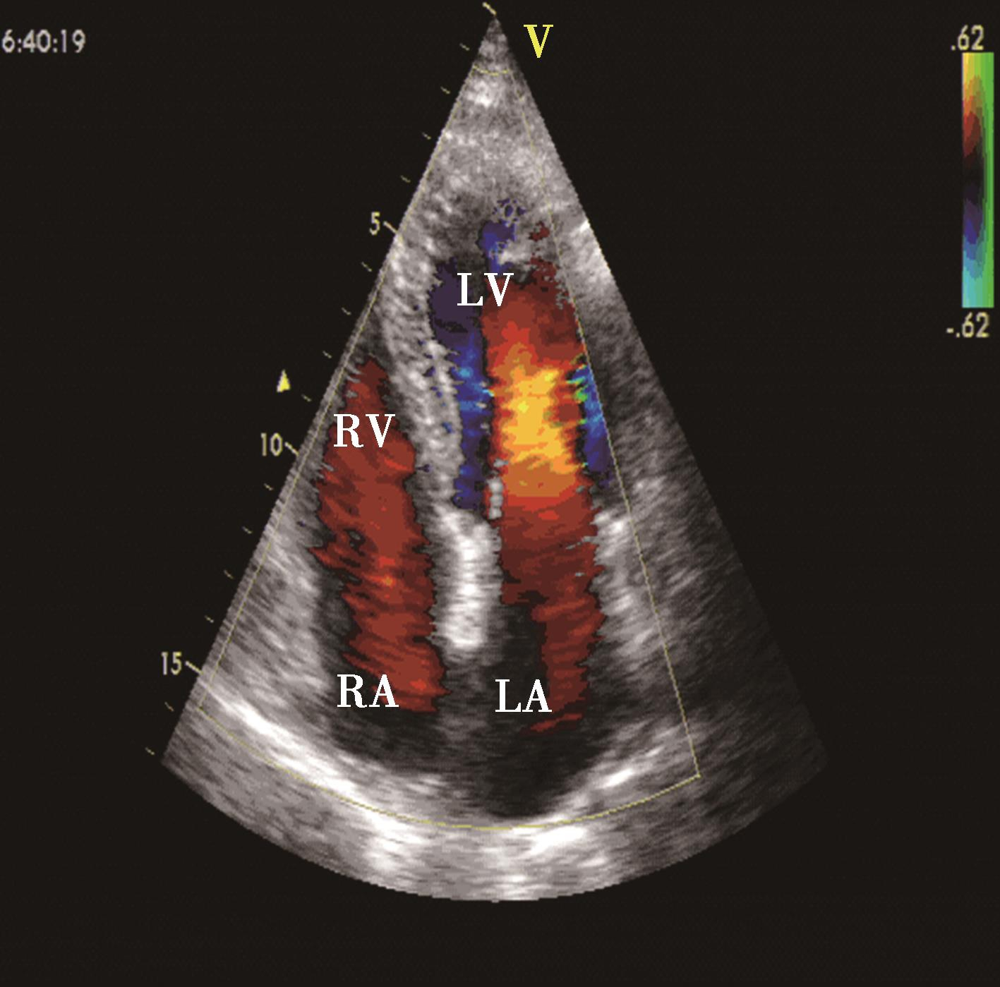
图2-1-20 三尖瓣彩色血流多普勒
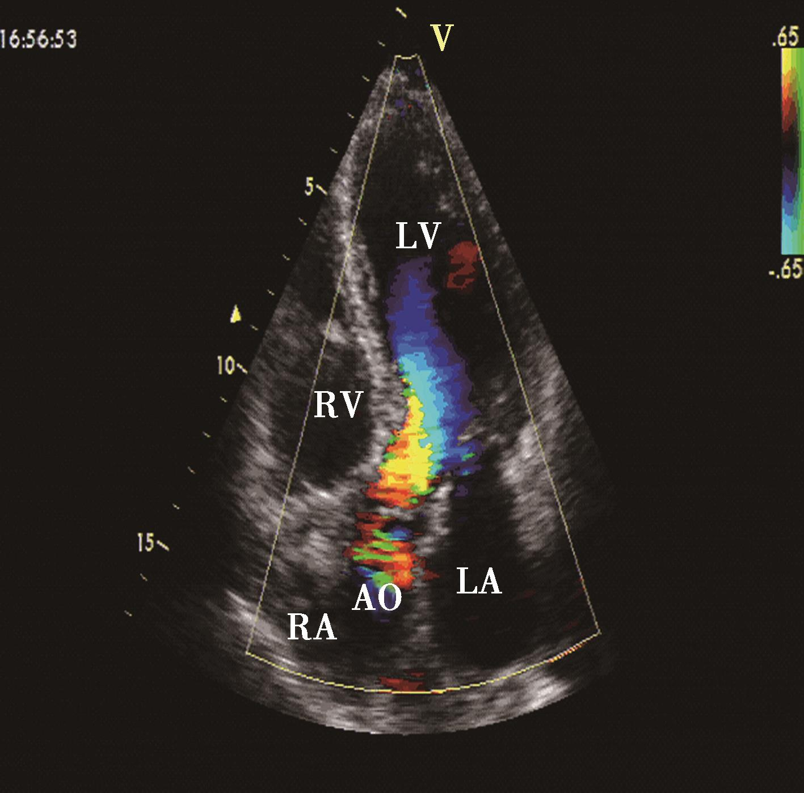
图2-1-21 主动脉瓣口彩色血流多普勒
(四)肺动脉瓣口彩色血流多普勒
可见收缩期经肺动脉瓣口进入肺动脉主干的蓝色血流，肺动脉瓣口可观察到舒张期少量红色反流束，为正常的生理性反流(图2-1-22)。
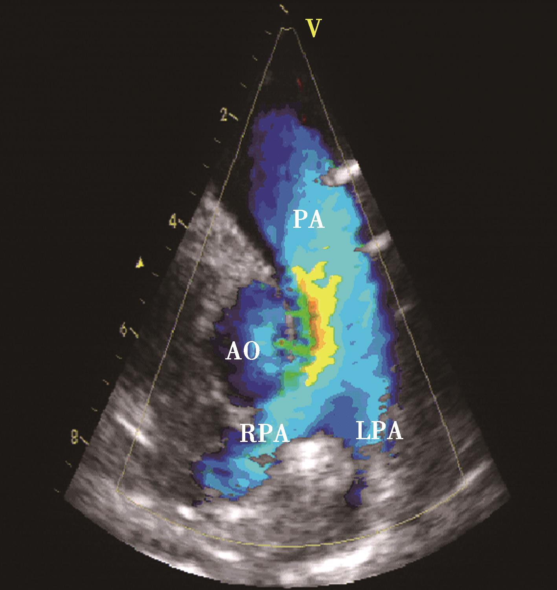
图2-1-22 肺动脉瓣口彩色血流多普勒
(五)升主动脉及降主动脉彩色血流多普勒
取胸骨上窝主动脉长轴切面为观察切面，此切面上升主动脉的血流迎向探头，血流呈红色，而降主动脉内血流背离探头方向，血流呈蓝色(图2-1-23)。
(六)右上肺静脉彩色血流多普勒
取心尖四腔心切面观察，可于收缩末期观察到右上肺静脉进入左心房呈红色的血流(图2-1-24)。
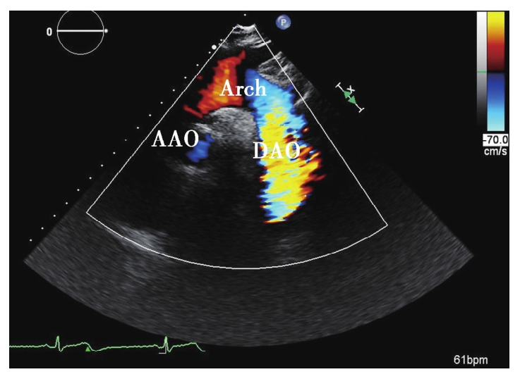
图2-1-23 升主动脉及降主动脉彩色血流多普勒
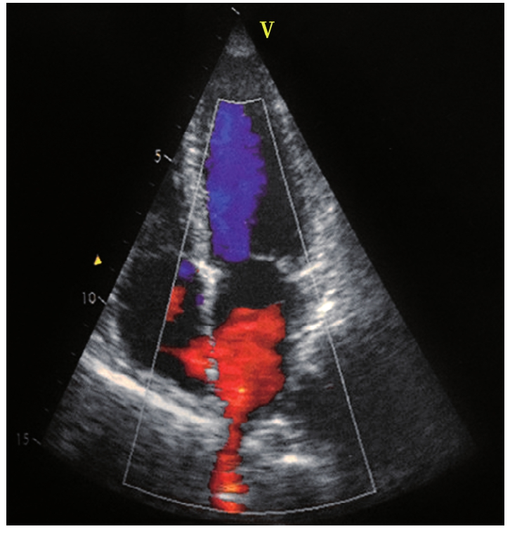
图2-1-24 右上肺静脉彩色血流多普勒
(七)上、下腔静脉彩色血流多普勒
上、下腔静脉可采用剑突下下腔静脉长轴切面，观察下腔静脉血流时可见暗蓝色的血流自下腔静脉进入右心房，观察上腔静脉时可见红色血流自上腔静脉进入右心房内(图2-1-25、图2-1-26)。
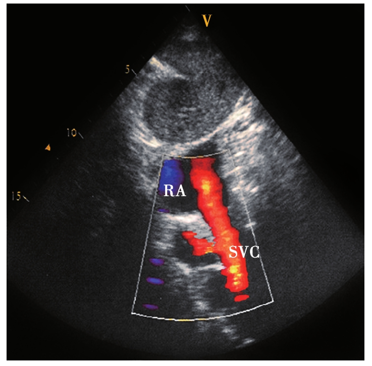
图2-1-25 剑突下上腔静脉切面显示上腔静脉进入右心房的红色血流信号
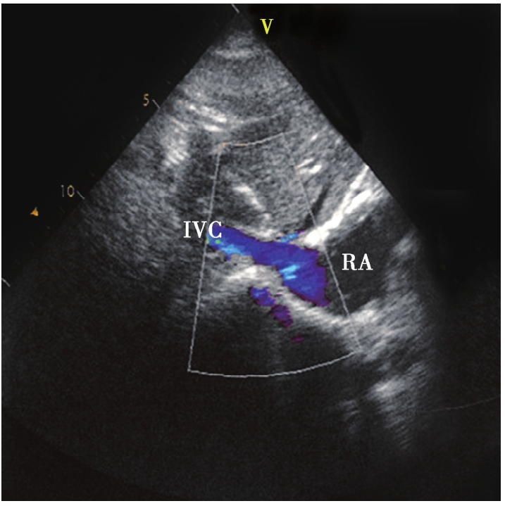
图2-1-26 剑突下下腔静脉切面显示下腔静脉进入右心房的蓝色血流信号
五、正常各瓣口彩色血流多普勒频谱特点
(一)二尖瓣血流频谱
选取心尖四腔心切面，将取样容积置于二尖瓣口左心室侧(图2-1-27)。
(二)三尖瓣血流频谱
选取心尖四腔心切面，将取样容积置于三尖瓣口右心室侧(图2-1-28)。
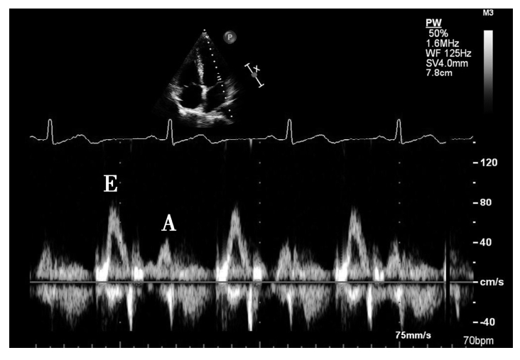
图2-1-27 二尖瓣口血流频谱
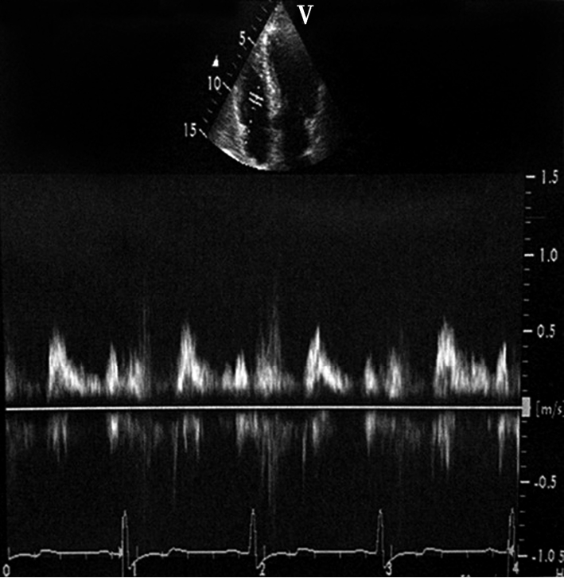
图2-1-28 三尖瓣口血流频谱
(三)主动脉瓣血流频谱
选取心尖五腔心切面，将取样容积置于主动脉瓣上(图2-1-29)。
(四)肺动脉瓣血流频谱
选取胸骨旁主动脉短轴切面，将取样容积置于肺动脉瓣上3mm处的肺动脉中央(图2-1-30)。
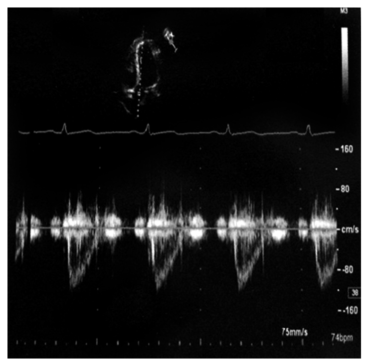
图2-1-29 主动脉瓣口血流频谱
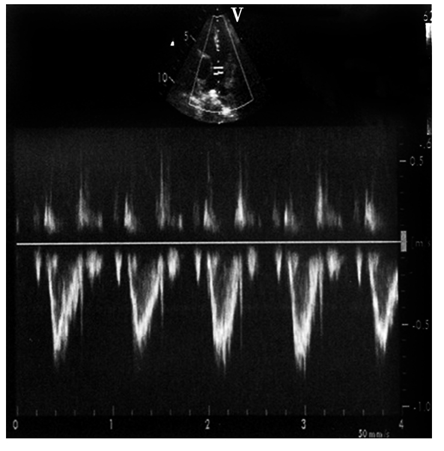
图2-1-30 肺动脉瓣口血流频谱
(五)肺静脉血流频谱
选取心尖四腔心切面，将取样容积置于右上肺静脉的开口。
(六)腔静脉血流频谱
上、下腔静脉内为静脉血，其多普勒频谱呈连续的起伏波型(图2-1-31)。
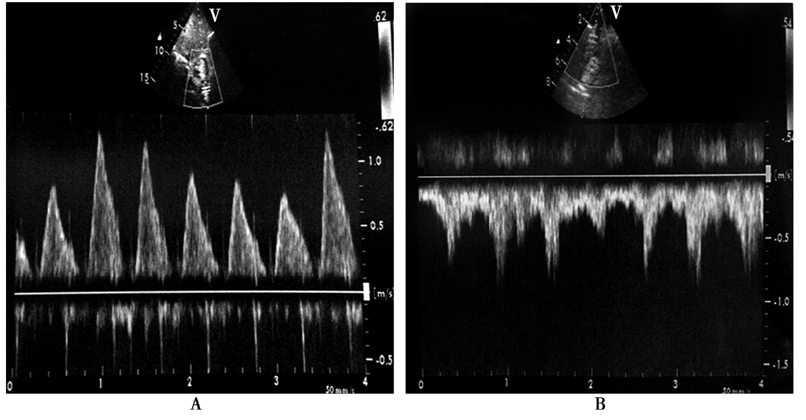
图2-1-31 腔静脉血流频谱
A.剑突下上腔静脉血流频谱; B.胸骨上窝切面上腔静脉的血流频谱
第2节 心功能的测定和评价
一、左心室收缩功能的测定
常用指标包括每搏量、心排血量、心脏指数、射血分数、左心室短轴缩短率、平均周期缩短率、左心室后壁增厚率。
二、左心室舒张功能的测定
常用指标包括左心室等容舒张时间、二尖瓣血流舒张早期最大流速、二尖瓣血流心房收缩期最大流速、E波与A波流速的比值、E波减速时间、左心房收缩期肺静脉反流速度、二尖瓣前叶E峰至室间隔左心室面的距离、A波时限、舒张早期左心室充盈血流的传播速度、二尖瓣瓣环早期舒张速度和晚期舒张速度。
三、右心室收缩功能的测定
可通过室间隔运动方向、右心室前壁增厚率、肺动脉收缩期最大血流速度、肺动脉收缩压、肺动脉血流量的测定来评价右心功能。
四、右心室舒张功能的测定
可通过右心室等容舒张时间、三尖瓣血流舒张早期最大流速、三尖瓣血流心房收缩期最大流速、E波与A波流速比值、E波减速时间来评价右心室舒张功能。
第3节 心脏瓣膜疾病
一、二尖瓣狭窄
(一)检查前准备
无须特殊准备，患者常用体位为左侧卧位，图像清晰者取仰卧位亦可。
(二)超声扫查方法
1.体位的选择
患者常用体位为左侧卧位，图像清晰者取仰卧位亦可。
2.探头的部位
胸骨旁左缘第2～5肋间(多在第3～4肋间)
(三)常规经胸二维超声切面
1.胸骨旁左心室长轴切面
探头位置常置于胸骨旁左缘第2～5肋间(多在第3～4肋间)，标准切面为主动脉与室间隔的结合点位于图像中线上，同时主动脉瓣右冠瓣与无冠瓣关闭线位于主动脉窦中间。该切面能够观察到二尖瓣前后叶增厚、回声增强，尤以瓣尖为主，有时可见斑点状或斑块状钙化，以前后瓣叶联合处多见。在舒张期时，二尖瓣前叶瓣体凸向室间隔形成气球样改变，瓣叶基底段的活动度较瓣缘大。二尖瓣后叶明显抬高直立，随前叶一起向前运动，瓣叶开放受限。将超声束略向右下方倾斜时易于观察到二尖瓣瓣下腱索增粗、短缩及融合，回声增强，甚至累及乳头肌。二尖瓣毗邻解剖结构有右心室前壁、右心室(多有增大)和右心室流出道、室间隔、左心室(正常大小或相对性减小)、左心室流出道、左心室后壁、主动脉及主动脉瓣、左心房(增大)及降主动脉。
2.胸骨旁二尖瓣口短轴切面
是在左心室长轴切面的基础上，顺时针将探头旋转90°，探测时应尽量使声束与左心室腔垂直以保证左心室腔的切面尽可能呈圆形，探测到二尖瓣瓣口最小面积，用轨迹球进行勾画(图2-3-1)，在这一切面可显示二尖瓣前后叶联合处明显粘连、融合，瓣口前后径＜20mm，正常二尖瓣口面积为4～6cm 2 ，此时二尖瓣口面积变小，呈“鱼嘴状”。轻度狭窄时，瓣口面积缩小至1.5～2.0cm 2 ;中度狭窄时，瓣口面积为1.0～1.5cm 2 ;重度狭窄时，瓣口面积≤1.0cm 2 ;极重度狭窄时，瓣口面积可缩小为一小孔，≤0.6cm 2 。
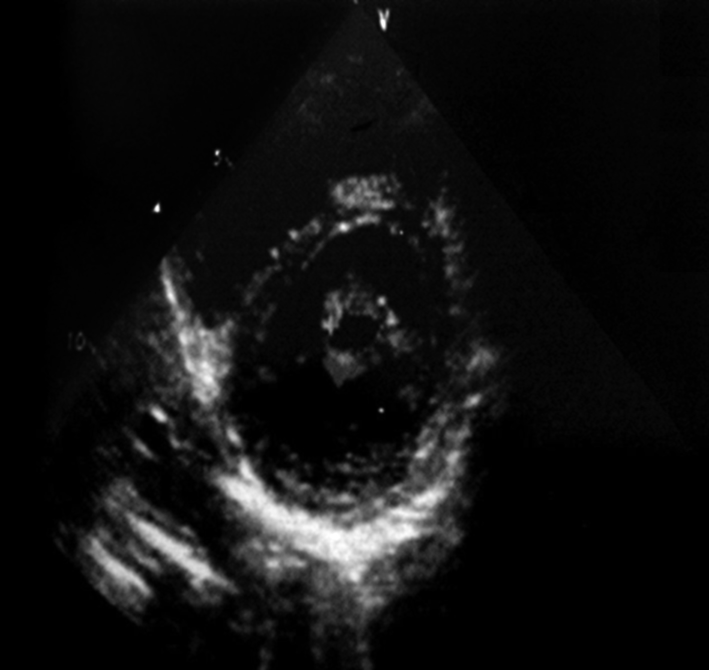
图2-3-1 面积法测量二尖瓣口面积
3.心尖四腔心切面
在左心室长轴切面图像的基础上，沿左心室长轴向左下移动探头，到达心尖后顺时针旋转探头90°，同时向右上倾斜探头，即可获得此切面图像，注意标准图像一定要“横平竖直”。可观察到的解剖结构有室间隔、房间隔、左心房及左心室、右心房及右心室、二尖瓣前叶、后叶及三尖瓣前叶和隔叶。重点观察二尖瓣瓣叶有无增厚钙化、瓣下腱索有无钙化、粘连融合及其程度，有无心房腔及心耳部的附壁血栓形成，测二尖瓣瓣口狭窄血流流速及跨瓣压差，要注意二尖瓣多普勒血流测定时要在瓣口开放处，同时避免主动脉瓣反流对其的影响。另外结合彩色多普勒和频谱多普勒观察有无瓣膜反流及其程度。
4.心尖左心室长轴切面
心尖左心室长轴切面扫查方向与胸骨旁左心室长轴基本相同，不同之处在于前者探头置于心尖部，而后者置于胸骨旁。此切面可显示左心室后壁、前间隔、心尖、主动脉瓣及二尖瓣。将M型超声心动图取样线移动至腱索水平，特征性标志是二尖瓣前叶的“城墙样改变”回声增强和瓣叶运动幅度减低，前后叶开放幅度减小，与前叶的运动曲线平行，呈同向运动，舒张期EF斜率减低，严重者A波消失(图2-3-2)。
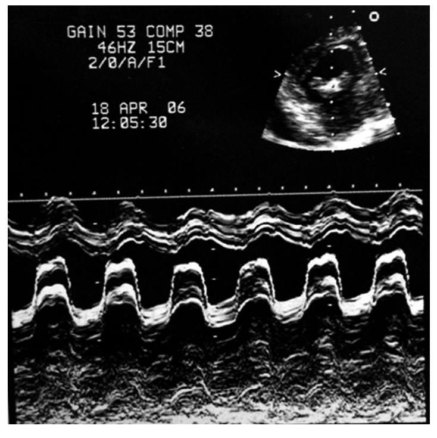
图2-3-2 二尖瓣狭窄M型曲线
【难点解析】
1.测量瓣口横截面积是判断二尖瓣狭窄严重程度最重要的方法，二维超声轨迹法测量瓣口面积时应首先在胸骨旁左心室长轴切面测量二尖瓣口的最大开放幅度，然后在胸骨旁左心室短轴二尖瓣尖的同一水平切面测量二尖瓣瓣口的开放面积。
2.室间隔缺损、动脉导管未闭、主动脉窦瘤破裂、二尖瓣关闭不全等疾病二尖瓣口血流量均增多，出现二尖瓣血流速度高于正常，它们与二尖瓣狭窄的鉴别点在于前者流速增高并不局限于二尖瓣口，脉冲多普勒检查可发现流速增高贯穿于整个流入道。
二、二尖瓣关闭不全
(一)检查前准备
无须特殊准备，患者常用体位为左侧卧位，图像清晰者取仰卧位亦可。
(二)超声扫查方法
1.体位的选择
患者常用体位为左侧卧位，图像清晰者取仰卧位亦可。
2.探头的部位
胸骨旁左缘2～5肋间(多在3～4肋间)，胸骨上窝和剑突下。
(三)常规经胸二维超声切面
1.胸骨旁左心室长轴切面
探头位置常置于胸骨旁左缘第2～5肋间(多在第3～4肋间)，标准切面为主动脉与室间隔的结合点位于图像中线上，同时主动脉瓣右冠瓣与无冠瓣关闭线位于主动脉窦中间。该切面能够观察到二尖瓣关闭时对合欠佳或关闭有裂隙。二尖瓣毗邻解剖结构有右心室前壁、右心室和右心室流出道、室间隔(运动增强)、左心室(增大)、左心室流出道、左心室后壁(运动增强)、主动脉及主动脉瓣、左心房(增大)及降主动脉。用彩色多普勒血流成像可见左心房内收缩期异常反流束，起自二尖瓣瓣口延伸至左心房(图2-3-3)，是诊断二尖瓣反流最直接、可靠的依据。在面积法中，左心房内反流束面积＜左心房面积20%为轻度反流，20%～40%为中度反流，＞40%为重度反流。彩色多普勒超声显示收缩期从二尖瓣关闭不全裂隙向左心房内以蓝色为主的五彩镶嵌反流血流束。反流束起源处一般是在二维超声切面的二尖瓣对合不良处，二尖瓣反流起始处的宽度也可以反映二尖瓣反流的程度，宽度越宽，则反流越重。
2.心尖四腔心切面
在左心室长轴切面图像的基础上，沿左心室长轴向左下移动探头，到达心尖后顺时针旋转探头90°，同时向右上倾斜探头，即可获得此切面图像，注意标准图像一定要“横平竖直”。可观察到的解剖结构有室间隔、房间隔、左心房及左心室、右心房及右心室、二尖瓣前叶、后叶及三尖瓣前叶和隔叶，将连续多普勒的取样容积置于二尖瓣口处，获得完整的反流频谱，频谱为单峰，峰值位于中央。峰顶圆钝，上升支和下降支基本对称，时间占据等容收缩期、收缩期和等容舒张期，应注意调整连续多普勒取样线放置位置，以获得最大的反流血流速度。
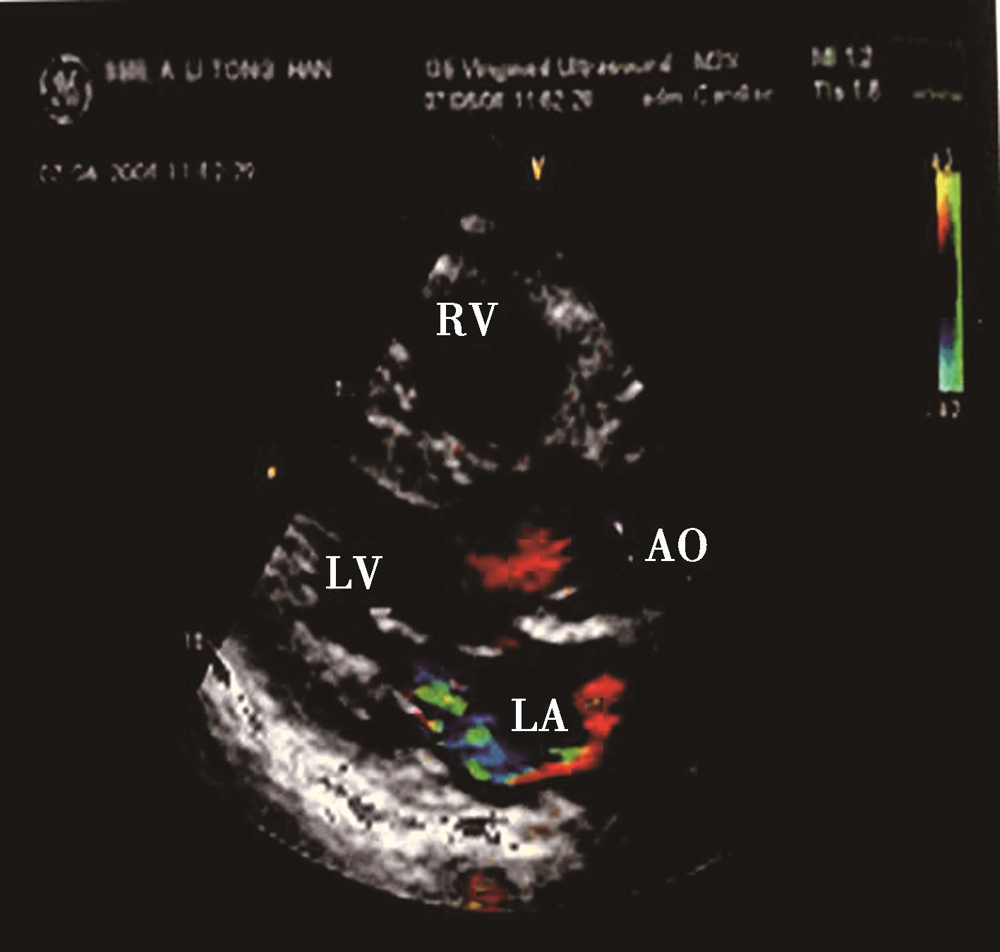
图2-3-3 二尖瓣关闭不全彩色多普勒表现
3.二尖瓣水平左心室短轴切面
是在左心室长轴切面的基础上，顺时针将探头旋转90°，探测时应尽量使声束与左心室腔垂直以保证左心室腔的切面尽可能呈圆形，二尖瓣口短轴切面可显示收缩期前后叶对合状态，轻度二尖瓣关闭不全者多为单侧瓣联合处对合不良，重度者常显示为较大面积的中央对合缝隙。
【难点解析】
1.为准确显示反流束的全貌，防止低估反流程度，需多切面、多方向、多水平、多角度扫查，不拘泥于二维超声的标准切面。
2.收缩期在左心房内出现的多普勒信号并不一定代表存在二尖瓣反流，还可包括主动脉瓣血流的混响效应，正常肺静脉血流、不适当的增益、二尖瓣关闭时引起左心房内血流的正常向后运动等，这些伪信号容易被错误地诊断为二尖瓣反流或者高估了反流程度。
三、二尖瓣脱垂
(一)检查前准备
无须特殊准备，患者常用体位为左侧卧位，图像清晰者取仰卧位亦可。取胸骨旁左心室长轴切面、心尖四腔心切面，由于二尖瓣环的非平面性，四腔心切面上二尖瓣脱垂的发生率明显高于左心室长轴切面。
(二)超声扫查方法
1.体位的选择
患者常用体位为左侧卧位，图像清晰者取仰卧位亦可。
2.探头的部位
胸骨旁左缘第2～5肋间(多在第3～4肋间)，胸骨上窝和剑突下。
(三)常规经胸二维超声切面
1.胸骨旁左心室长轴切面
探头位置常置于胸骨旁左缘第2～5肋间(多在第3～4肋间)，标准切面为主动脉与室间隔的结合点位于图像中线上，同时主动脉瓣右冠瓣与无冠瓣关闭线位于主动脉窦中间。声束穿越二尖瓣前叶和后叶的中段，是反映二尖瓣的形态和活动度的基本切面(图2-3-4)，在舒张期二尖瓣前、后叶均开放，与声束基本垂直，有利于判断二尖瓣的厚度和最大开放幅度;在收缩期，二尖瓣前、后叶关闭，能够很好判断二尖瓣的对合和对位关系。还能够显示二尖瓣瓣下结构，包括腱索和乳头肌及其与瓣叶的连续性等。将M型超声心动图取样线移动至腱索水平，特征性表现为多重回声及收缩期“吊床样”改变，即二尖瓣波群可见收缩中晚期或全收缩期二尖瓣曲线CD段后移，呈“吊床样”，曲线最低点与C、D点连线间距离大于2mm。二尖瓣毗邻解剖结构有右心室前壁、右心室和右心室流出道、室间隔(运动增强)、左心室(增大)、左心室流出道、左心室后壁(运动增强)、主动脉及主动脉瓣、左心房(增大)及降主动脉。
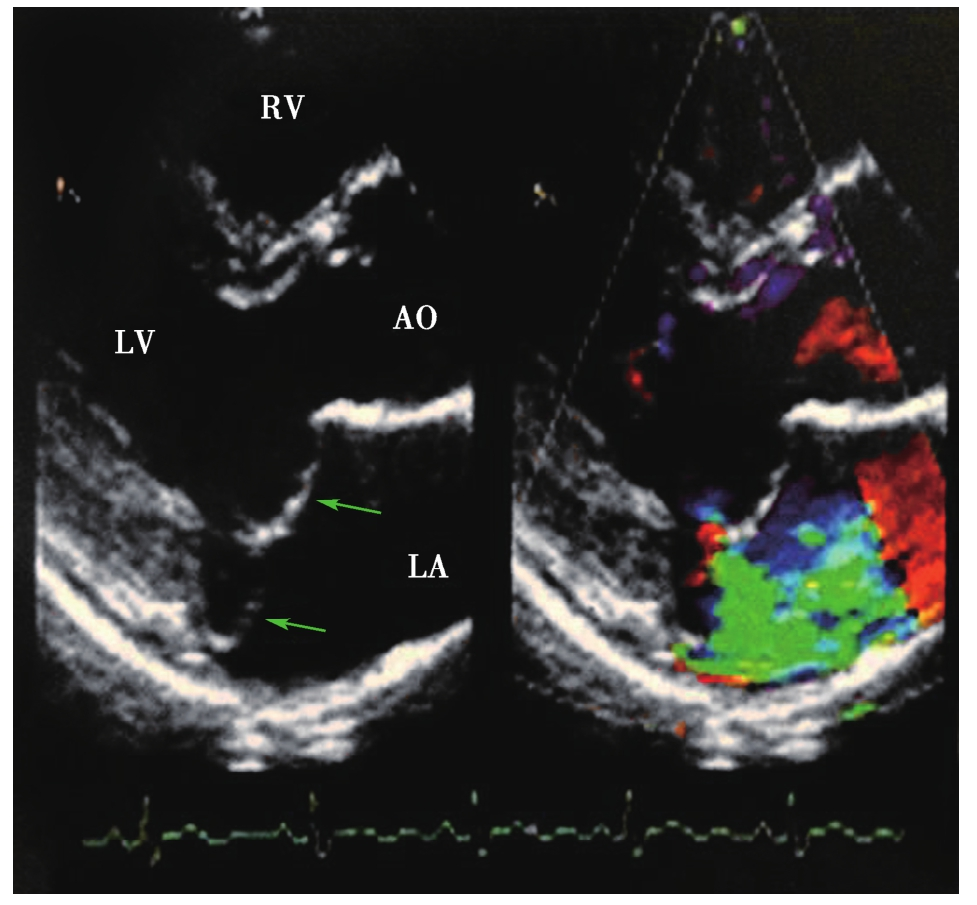
图2-3-4 二尖瓣脱垂超声表现
2.心尖四腔心切面
在左心室长轴切面图像的基础上，沿左心室长轴向左下移动探头，到达心尖后顺时针旋转探头90°，同时向右上倾斜探头，即可获得此切面图像，注意标准图像一定要“横平竖直”，在此切面上显示心室收缩期二尖瓣前叶和(或)后叶瓣体部向左心房方向弯曲突出，体部呈弧形超越瓣环水平进入左心房，二尖瓣瓣叶活动幅度增大，舒张期弯曲状瓣叶迅速移位，二尖瓣前叶脱垂时使二尖瓣前叶与室间隔在左心室快速充盈时间距减小。另外，用连续多普勒检查时，将取样容积置于二尖瓣左心房侧，收缩期可探及负向的高速湍流频谱，频带增宽，以心尖四腔心切面取得的频谱最佳。
(四)彩色多普勒超声心动图
彩色多普勒于左心房内探及收缩期源于二尖瓣口以蓝色为主的五彩镶嵌血流束，反流束通常呈偏心性。
【难点解析】
1.二尖瓣脱垂应与其他原因所致的二尖瓣反流相鉴别，如并发房颤的冠心病，可见左心房、左心室腔增大，二尖瓣反流，但室壁运动不强，二尖瓣活动幅度不大，易于鉴别。
2.二尖瓣脱垂很容易出现假阳性或假阴性，探头方向的调节与操作手法十分关键，探头向下倾斜时，在M型易于造成假阳性，相反，声束角度向上倾斜易造成假阴性。所以，在扫查时应注意使声束方向尽量垂直。
3.反流束的形态和走行方向有助于判断瓣叶脱垂部位:二尖瓣前叶脱垂时，反流束起自瓣口，沿后叶瓣体及左心房后壁走行，起始部的血流呈多色镶嵌信号;二尖瓣后叶脱垂时，反流束常沿前叶瓣体及左心房顶部走行，反流程度较重时，血流可折返;两叶脱垂时反流束为中心性，朝向左心房中央。
四、二尖瓣赘生物
(一)检查前准备
无须特殊准备，患者常用体位为左侧卧位，图像清晰者取仰卧位亦可。
(二)超声扫查方法
1.体位的选择
患者常用体位为左侧卧位，图像清晰者取仰卧位亦可。
2.探头的部位
胸骨旁左缘第2～5肋间(多在第3～4肋间)，胸骨上窝和剑突下。
(三)常规经胸二维超声切面
1.胸骨旁左心室长轴切面
探头位置常置于胸骨旁左缘第2～5肋间(多在第3～4肋间)，标准切面为主动脉与室间隔的结合点位于图像中线上，同时主动脉瓣右冠瓣与无冠瓣关闭线位于主动脉窦中间。可见到二尖瓣瓣尖、腱索、心内膜有团块回声附着，并随瓣叶启闭而呈摆动运动(图2-3-5)。
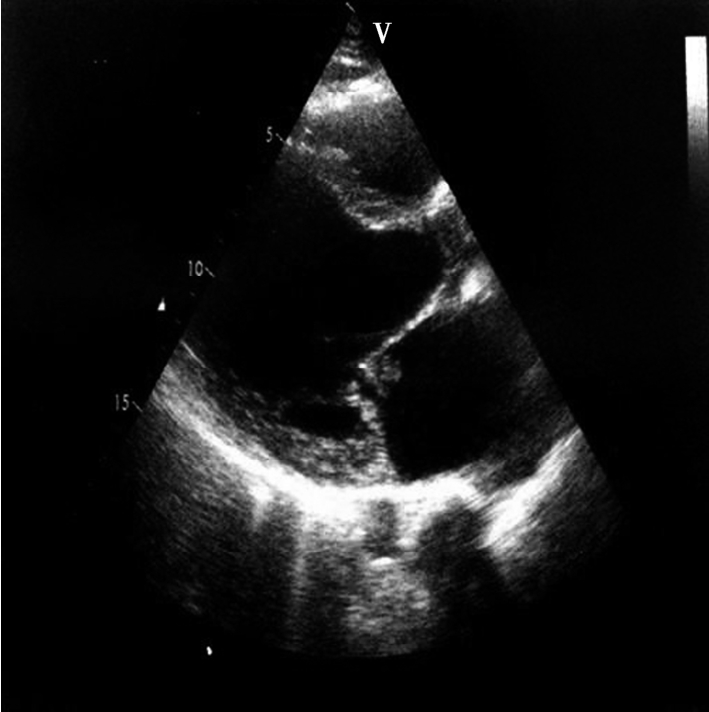
图2-3-5 二尖瓣赘生物超声表现
2.心尖四腔心切面
在左心室长轴切面图像的基础上沿左心室长轴向左下移动探头，到达心尖后顺时针旋转探头90°，同时向右上倾斜探头，即可获得此切面图像，注意标准图像一定要“横平竖直”。在此切面上，赘生物的声像图特征为瓣膜上附着有大小不等的光团，形态不一，回声强度多呈等回声或略高回声，边缘模糊或清晰，亦可清晰显示不同程度的左心房及左心室扩大。
3.心尖两腔心切面
在心尖四腔心切面的基础上，逆时针旋转探头约45°，稍向左倾斜即可显示该切面，该切面主要显示左心室前壁、下壁、左心房及二尖瓣，在此切面上可以看到与四腔心切面相类似的赘生物图像。
【难点解析】
1.几乎所有的患者都会出现关闭不全，且反流速度较快，于心尖四腔心切面可探及收缩期负向湍流，当赘生物造成二尖瓣瓣口狭窄时，多普勒取样可于狭窄部位检测出舒张期正向高速血流。
2.彩色多普勒超声心动图主要用于观察二尖瓣瓣口或瓣膜穿孔处有无反流、反流范围，从而明确反流程度，根据反流束的起始部位判定是赘生物导致的瓣膜关闭不全引起的反流，还是瓣膜穿孔引起的反流。
3.新近形成的赘生物回声较低，多为团絮状，活动度大，直径在2mm以下的赘生物易被忽略，所以应多切面仔细观察，以免漏诊。
五、老年性瓣膜病
(一)检查前准备
无须特殊准备。
(二)超声扫查方法
1.体位的选择
患者常用体位为左侧卧位，图像清晰者取仰卧位亦可。
2.探头的部位
胸骨旁左缘第2～5肋间(多在第3～4肋间)，胸骨上窝和剑突下。
(三)常规经胸二维超声切面
1.左心室长轴切面
探头位置常置于胸骨旁左缘第2～5肋间(多在第3～4肋间)，标准切面为主动脉与室间隔的结合点位于图像中线上，同时主动脉瓣右冠瓣与无冠瓣关闭线位于主动脉窦中间，二尖瓣毗邻解剖结构有右心室前壁、右心室和右心室流出道、室间隔、左心室、左心室流出道、左心室后壁、主动脉及主动脉瓣、左心房及降主动脉。
2.心尖四腔心切面
在左心室长轴切面图像的基础上，沿左心室长轴向左下移动探头，到达心尖后顺时针旋转探头90°，同时向右上倾斜探头，即可获得此切面图像，注意标准图像一定要“横平竖直”。可观察到的解剖结构有室间隔、房间隔、左心房及左心室、右心房及右心室、二尖瓣前叶、后叶及三尖瓣前叶和隔叶。在这两个切面上，二尖瓣瓣膜钙化呈高度的斑块、团块回声(图2-3-6)，严重时呈大块强回声，整个瓣环全部钙化时，瓣环呈浓密的强回声，部位以瓣环钙化为主，瓣叶改变少，严重钙化时腱索、乳头肌也增厚、钙化，左心房可增大，可引起心房颤动，甚至导致左心房内血栓形成。
3.主动脉根部短轴切面
在左心室长轴切面的基础上，向右上倾斜探头或者向右上移动探头，患者取左侧卧位有助于清晰显示，该切面可观察到主动脉根部左、右、无三个主动脉瓣，闭合时三个瓣叶呈“Y”字形，还可显示左心房、右心房、房间隔、三尖瓣隔叶(紧邻主动脉)和前叶、右心室及右心室流出道、肺动脉。
从心尖五腔心切面上也可以看到瓣叶增厚，回声增强，常伴有钙化、瓣叶联合部粘连、融合。瓣叶活动受限，弹性减低，呈僵硬感(图2-3-7)。
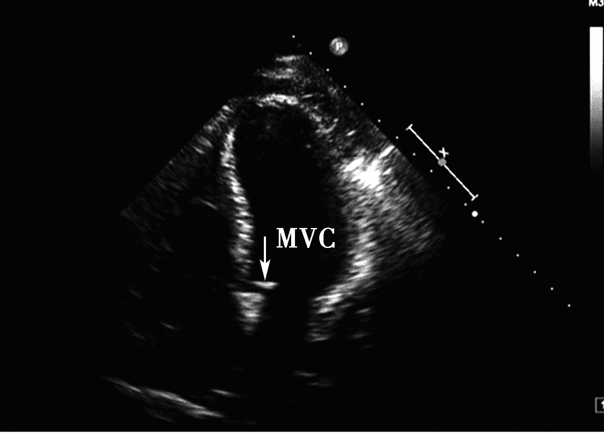
图2-3-6 二尖瓣钙化二维超声表现
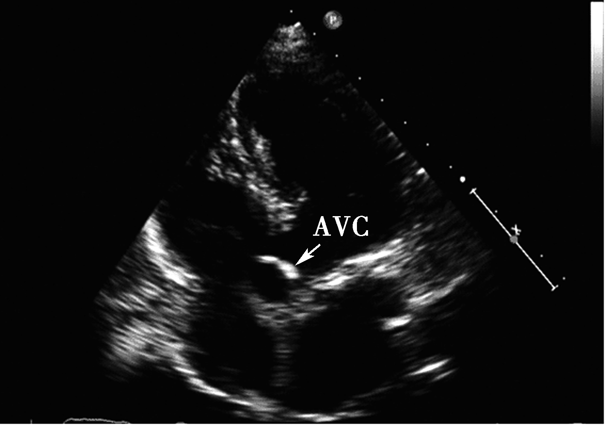
图2-3-7 主动脉瓣钙化超声表现
【难点解析】
1.因为钙化灶后方有声影，所以观察时探头应改变角度或部位。
2.注意与瓣膜赘生物鉴别，赘生物多附着在瓣膜上，有较大活动度。
六、主动脉瓣疾病
(一)检查前准备
无须特殊准备。
(二)超声扫查方法
1.体位的选择
患者常用体位为左侧卧位，图像清晰者取仰卧位亦可。
2.探头的部位
胸骨旁左缘第2～5肋间(多在第3～4肋间)，胸骨上窝和剑突下。
(三)常规经胸二维超声切面
1.胸骨左缘左心室长轴切面
探头位置常置于胸骨旁左缘第2～5肋间(多在第3～4肋间)，标准切面为主动脉与室间隔的结合点位于图像中线上，同时主动脉瓣右冠瓣与无冠瓣关闭线位于主动脉窦中间，周围毗邻解剖结构有右心室前壁、右心室和右心室流出道、室间隔、左心室、左心室流出道、左心室后壁、主动脉及主动脉瓣、左心房及降主动脉。在这一切面上显示右冠瓣和无冠瓣分别附着于主动脉的前后壁，收缩期主动脉瓣受血流冲击从中央开放贴近根壁，舒张期在中央关闭呈一条线。
2.主动脉短轴切面
在左心室长轴切面的基础上，向右上倾斜探头或者向右上移动探头，患者取左侧卧位有助于清晰显示，该切面可观察到主动脉根部左、右、无三个主动脉瓣，闭合时三个瓣叶呈“Y”字形，还可显示左心房、右心房、房间隔、三尖瓣隔叶(紧邻主动脉)和前叶、右心室及右心室流出道、肺动脉。
3.心尖五腔心切面
在心尖四腔心的基础上，再顺时针旋转探头约30°，即可获得此切面，该图像可在心尖四腔切面的基础上再显示出主动脉瓣和升主动脉。用频谱多普勒将取样容积放置于主动脉瓣口时，出现一收缩期负向、窄带、空心不对称近似直角三角形的血流频谱。
【难点解析】
室间隔膜部与主动脉右冠瓣相邻，在观察室间隔缺损时可在此处见到分流。
七、主动脉瓣狭窄
(一)检查前准备
无须特殊准备。
(二)超声扫查方法
1.体位的选择
患者常用体位为左侧卧位，图像清晰者取仰卧位亦可。
2.探头的部位
胸骨旁左缘第2～5肋间(多在第3～4肋间)，胸骨上窝和剑突下。
(三)常规经胸二维超声切面
1.胸骨左缘左心室长轴切面
探头位置常置于胸骨旁左缘第2～5肋间(多在第3～4肋间)，标准切面为主动脉与室间隔的结合点位于图像中线上，同时主动脉瓣右冠瓣与无冠瓣关闭线位于主动脉窦中间，周围毗邻解剖结构有右心室前壁、右心室和右心室流出道、室间隔、左心室、左心室流出道、左心室后壁、主动脉及主动脉瓣、左心房及降主动脉。在这一切面上显示瓣叶增厚，回声增强，常伴有钙化，瓣叶联合部粘连、融合，收缩期瓣叶开放后的位置与主动脉壁不再平行，瓣尖通常指向主动脉的中心。
2.主动脉短轴切面
在左心室长轴切面的基础上，向右上倾斜探头或者向右上移动探头，患者取左侧卧位有助于清晰显示，在判断瓣叶的数目以及是否存在一处或多处联合的融合是至关重要的，在这一切面还可以观察瓣叶的开放和关闭，可以初步判定瓣叶的狭窄程度。另外该切面还可显示左心房、右心房、房间隔、三尖瓣隔叶(紧邻主动脉)和前叶、右心室及右心室流出道、肺动脉(图2-3-8、图2-3-9)。
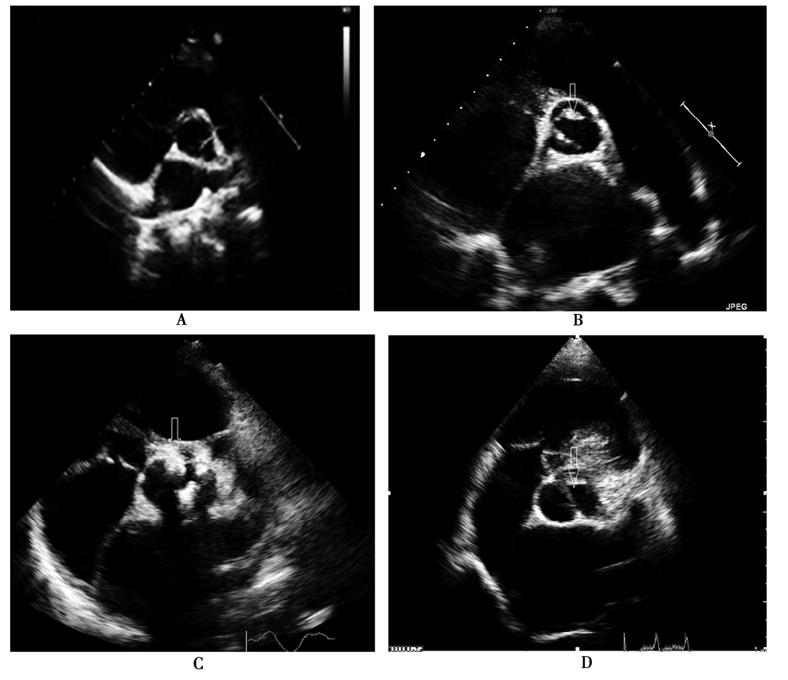
图2-3-8 不同病因致主动脉瓣狭窄的二维超声心动图表现
A.正常主动脉瓣; B.风湿性主动脉瓣病变; C.主动脉瓣钙化; D.主动脉瓣二瓣化
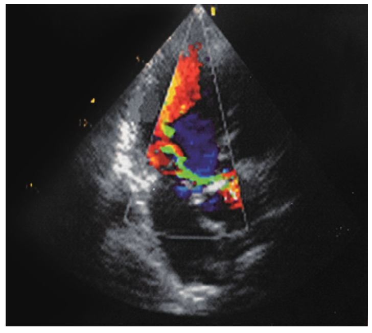
图2-3-9 主动脉瓣狭窄彩色血流表现
3.心尖五腔心切面
在心尖四腔心的基础上，再顺时针旋转探头约30°，即可获得此切面，该图像可在心尖四腔切面的基础上再显示出主动脉瓣和升主动脉。一般采用连续多普勒方法测量主动脉瓣狭窄峰值速度。在心尖五腔心切面测量时，其频谱为负向、单峰、上升支与下降支基本对称，跨瓣血流峰速通常在收缩中期达到峰值，峰速度一般大于2m/s (图2-3-10)。
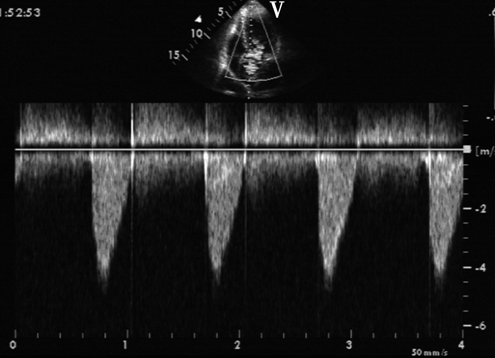
图2-3-10 主动脉瓣狭窄血流频谱表现
【难点解析】
1.在心尖五腔心切面探查主动脉瓣狭窄的血流信号，脉冲多普勒取样容积放置在主动脉瓣瓣口上方，由于血流速度较快出现频谱混叠，故常采用连续多普勒CW测量主动脉瓣狭窄峰值速度。
2.取样线的角度与主动脉跨瓣血流的方向要平行，否则会导致低估真正的跨瓣血流速度。
3.呼气后短暂屏气有助于获得理想的主动脉瓣血流速度频谱。
4.肥厚型心肌病伴左心室流出道梗阻导致主动脉瓣瓣口血流速度加快，二维超声心动图切面显示左心室心肌异常肥厚，与左心室后壁呈非对称性肥厚，两者之比＞1.5∶1，这可以与主动脉瓣狭窄相鉴别。
八、主动脉瓣关闭不全
(一)检查前准备
无须特殊准备。
(二)超声扫查方法
1.体位的选择
患者常用体位为左侧卧位，图像清晰者取仰卧位亦可。
2.探头的部位
胸骨旁左缘第2～5肋间(多在第3～4肋间)，胸骨上窝和剑突下。
(三)常规经胸二维超声切面
1.左心室长轴切面
探头位置常置于胸骨旁左缘第2～5肋间(多在第3～4肋间)，标准切面以主动脉与室间隔的结合点位于图像中线上为准，同时主动脉瓣右冠瓣与无冠瓣关闭线位于主动脉窦中间，周围毗邻解剖结构有右心室前壁、右心室和右心室流出道、室间隔、左心室、左心室流出道、左心室后壁、主动脉及主动脉瓣、左心房及降主动脉，该切面主动脉瓣表现为增厚、回声增强、挛缩变形，可以见到瓣叶关闭不全时的对合不良，出现缝隙。
2.主动脉短轴切面
在左心室长轴切面的基础上，向右上倾斜探头或者向右上移动探头，患者取左侧卧位有助于清晰显示，对于判断瓣叶的数目以及是否存在一处或多处联合的融合是至关重要的，该切面可见到开放是呈大三角状，关闭时中央或一侧留有缝隙。
3.心尖五腔心切面
在心尖四腔心的基础上，再顺时针旋转探头约30°，即可获得此切面。主动脉瓣反流的频谱多普勒取样多在该切面获得，采用连续多普勒能录及完整的主动脉瓣反流频谱:单峰，较宽、持续整个舒张期，频谱充填，方向取决于反流束与声束方向。反流的速度只反映舒张期左心室与主动脉间的压差，在舒张早期压差最大，反流峰值速度一般在4m/s (图2-3-11)。
彩色多普勒超声心动图可显示主动脉瓣反流束的大小范围与反流容量间的关系。反流束宽度/左心室流出道宽度＜30%为轻度反流; 30%～60%为中度反流;＞60%为重度反流(图2-3-12)。
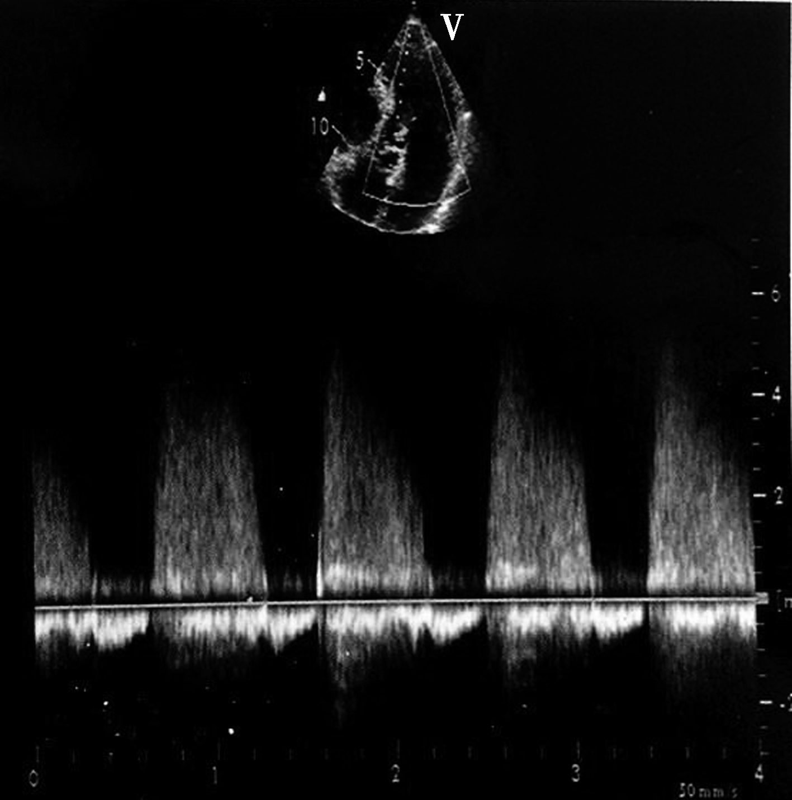
图2-3-11 主动脉瓣关闭不全频谱表现
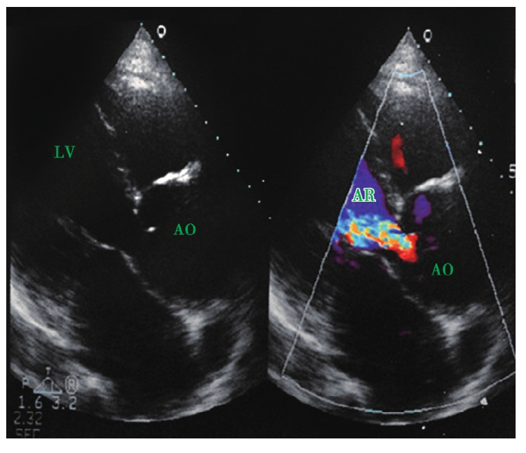
图2-3-12 主动脉瓣关闭不全超声表现
【难点解析】
如果脉冲多普勒在降主动脉或腹主动脉内记录到全舒张期反向血流频谱，则提示存在严重的主动脉瓣反流。
九、主动脉瓣赘生物
(一)检查前准备
无须特殊准备。
(二)超声扫查方法
1.体位的选择
患者常用体位为左侧卧位，图像清晰者取仰卧位亦可。
2.探头的部位
胸骨旁左缘第2～5肋间(多在第3～4肋间)，胸骨上窝和剑突下。
(三)常规经胸二维超声切面
1.左心室长轴切面
探头位置常置于胸骨旁左缘第2～5肋间(多在第3～4肋间)，标准切面为主动脉与室间隔的结合点位于图像中线上，同时主动脉瓣右冠瓣与无冠瓣关闭线位于主动脉窦中间，周围毗邻解剖结构有右心室前壁、右心室和右心室流出道、室间隔、左心室、左心室流出道、左心室后壁、主动脉及主动脉瓣、左心房及降主动脉。该切面上可显示赘生物呈团块状、蓬草状或绒毛絮状，边缘多模糊，为中等或强回声附着在主动脉瓣膜上，常累及一个或相邻的两个瓣叶(图2-3-13)。
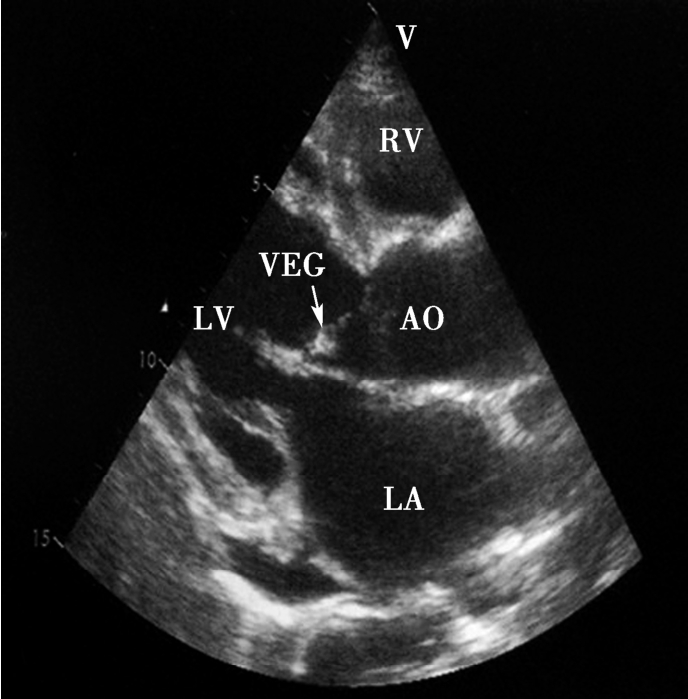
图2-3-13 主动脉瓣赘生物二维超声表现
2.主动脉短轴切面
在左心室长轴切面的基础上，向右上倾斜探头或者向右上移动探头，患者取左侧卧位有助于清晰显示，赘生物以右冠瓣多见，形态不规则，大小不一，一般通过短小的蒂与主动脉瓣膜相连，大部分游离于心腔之内，有明显的自主活动度。
3.心尖五腔心切面
在心尖四腔心的基础上，再顺时针旋转探头约30°，即可获得此切面。该切面可观察到赘生物呈“连枷样”运动，随心动周期漂浮于心腔之内，并与瓣叶一同运动。将连续多普勒的取样容积放置于左心室流出道部位，舒张期可录及正向的高速湍流频谱，当同时伴有主动脉瓣狭窄时，可录及收缩期负向的高速射流频谱。
【难点解析】
因为主动脉瓣上的赘生物通常回声很高，后方有声影，使主动脉显示困难，经胸超声对检出2mm以下的赘生物和小的脓肿也较困难，可对可疑病例行食管超声检查。
十、人工心脏瓣膜
(一)检查前准备
无须特殊准备。
(二)超声扫查方法
1.体位的选择
患者常用体位为左侧卧位，图像清晰者取仰卧位亦可。
2.探头的部位
胸骨旁左缘第2～5肋间(多在第3～4肋间)，胸骨上窝和剑突下。
(三)常规经胸二维超声切面
常用标准切面的声像图包括胸骨旁左心室长轴切面、主动脉短轴切面、心尖四腔心切面、心尖五腔心切面。
二尖瓣位侧倾碟瓣的常规切面显示瓣环回声强，呈半环状，有时呈点状强回声，舒张期碟片开放分大、小两口，收缩期碟片关闭回到瓣环。主动脉瓣位侧倾碟瓣于左心室长轴切面显示瓣环紧贴主动脉内壁，呈强回声，碟片舒张期位于瓣环内，收缩期开放时与超声束近似垂直位，呈多条回声。生物瓣瓣叶纤细，回声如细线样，启闭好。取心尖四腔心切面，将取样容积置于二尖瓣机械瓣上，尽量保证取样容积置于机械瓣主血流方向上，启动脉冲多普勒获得二尖瓣血流频谱。取心尖五腔心切面，将取样容积置于主动脉瓣机械瓣上，启动脉冲多普勒获得血流频谱，频谱形态与自然主动脉瓣相似，即加速时间与减速时间基本相等，呈倒三角形(图2-3-14～图2-3-16)。
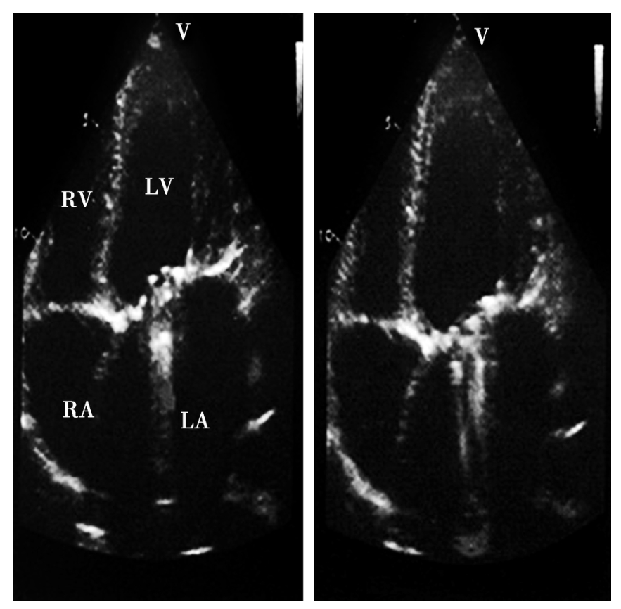
图2-3-14 机械瓣二维超声表现
【难点解析】
1.在测量二尖瓣机械瓣血流频谱时，窦性心律者至少要测量3个心动周期，而心房颤动者则至少要测量5个心动周期。
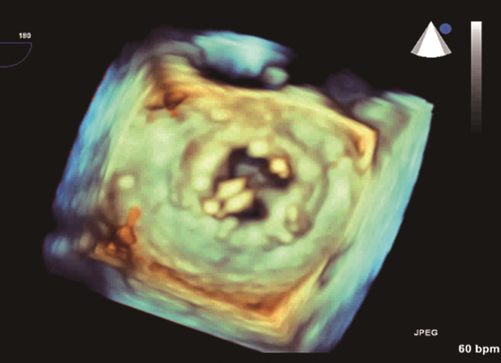
图2-3-15 二叶人工机械瓣经食管实时三维超声左心房观
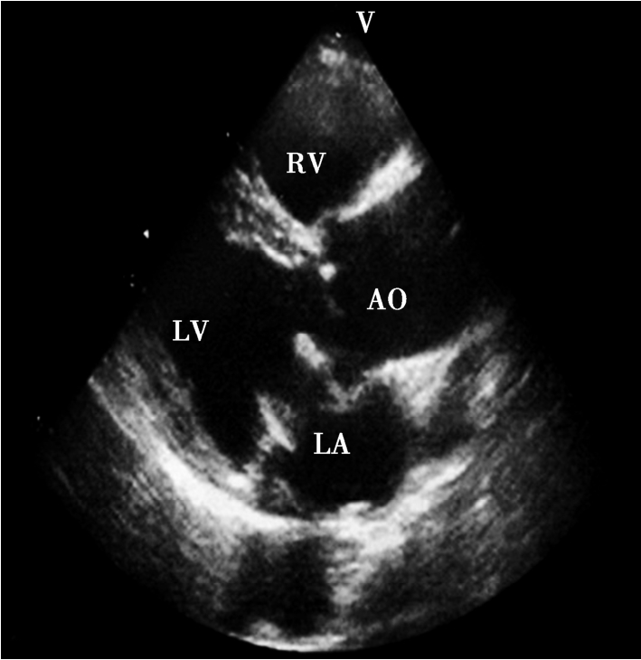
图2-3-16 生物瓣二维超声表现
2.人工瓣的支架、金属瓣环在超声检查时回声很强，影响瓣膜、瓣环赘生物、附壁血栓的检出，必要时可经食管超声心动图检查，提高病变检出率。
第4节 大血管疾病
一、主动脉瘤
(一)检查前准备
无须特殊准备。
(二)超声扫查方法
1.体位的选择
患者常用体位为左侧卧位，图像清晰者取仰卧位亦可。
2.探头的部位
胸骨旁左缘第2～5肋间(多在第3～4肋间)，胸骨上窝和剑突下。
(三)常规经胸二维超声切面
1.左心室长轴切面
探头位置常置于胸骨旁左缘第2～5肋间(多在第3～4肋间)，标准切面为主动脉与室间隔的结合点位于图像中线上，同时主动脉瓣右冠瓣与无冠瓣关闭线位于主动脉窦中间。该切面在主动脉管腔内径呈不同程度扩张，前后径＞4.5cm，扩张的主动脉可以表现为囊状、圆柱状等，动脉管壁变薄，搏动幅度减低，若部分动脉瘤内可见血栓回声，表现为附着在管壁的低回声或者较强回声，周围毗邻解剖结构有右心室前壁、右心室和右心室流出道、室间隔、左心室(增大)、左心室流出道、左心室后壁、主动脉及二尖瓣、左心房(增大)及降主动脉(图2-4-1)。
2.M型超声心动图
探头位置常置于胸骨旁左缘第2～5肋间(多在第3～4肋间)，标准切面为主动脉与室间隔的结合点位于图像中线上，同时主动脉瓣右冠瓣与无冠瓣关闭线位于主动脉窦中间，使M型超声心动图取样线通过主动脉根部，可依次显示出胸壁、右心室流出道、主动脉前壁、主动脉瓣、主动脉后壁、左心房、左心房后壁的M型曲线。该切面可显示病变部位的主动脉内径明显增宽，前、后壁的运动幅度减低，一般呈同向运动。右心室流出道内径变窄，靠近主动脉根部的瘤体，主动脉瓣开放时可见右冠瓣和无冠瓣关闭不合拢，瓣膜关闭时，关闭线呈双线。
(四)彩色多普勒血流显像
可见动脉瘤内血流呈漩涡状，血流速度减慢。
【难点解析】
真性动脉瘤和假性动脉瘤的鉴别，前者主动脉有明显扩张，内径多＞4.5cm，但管壁无连续性中段，仍为3层结构，而后者动脉管腔多无扩张，管壁的连续性中断，可见破裂口。
图2-4-1 左心室长轴切面显示主动脉根部呈瘤样扩张，主动脉右冠状窦和无冠状窦向外膨出
二、主动脉夹层
(一)检查前准备
无须特殊准备。
(二)超声扫查方法
1.体位的选择
患者常用体位为左侧卧位，图像清晰者取仰卧位亦可。
2.探头的部位
胸骨旁左缘第2～5肋间(多在第3～4肋间)，胸骨上窝和剑突下。
(三)常规经胸二维超声切面
1.左心室长轴切面
探头位置常置于胸骨旁左缘第2～5肋间(多在第3～4肋间)，标准切面为主动脉与室间隔的结合点位于图像中线上，同时主动脉瓣右冠瓣与无冠瓣关闭线位于主动脉窦中间(图2-4-2)。
2.主动脉根部短轴切面
在左心室长轴切面的基础上，向右上倾斜探头或者向右上移动探头，患者取左侧卧位有助于清晰显示。
3.胸骨上窝主动脉弓长轴切面
探头置于胸骨上窝，指向后下方心脏方向。该切面主要显示的结构包括无名动脉、左颈总动脉、左锁骨下动脉、升主动脉、降主动脉的起始部、右肺动脉(位于主动脉弓后方)。
在上述切面上可显示主动脉腔内可见纤细的低回声带，将主动脉分为真假两腔，真正的主动脉腔称为真腔，血肿腔为假腔，收缩期真腔扩大，假腔缩小，舒张期则正好相反。清晰显示主动脉内膜连续中断，内膜残端随血流摆动，可发现内膜破裂口。CDFI真腔内血流速度快，故腔内色彩鲜艳全部充填，假腔内血流缓慢，故色彩暗淡，充盈不全(图2-4-3)。
【难点解析】
除经胸检查外，应常规检查上腹部腹主动脉直至髂动脉切面。
由于食管紧邻胸降主动脉，经食管超声检查除了在主动脉弓部有一小的“盲区外”，能清晰显示胸主动脉全程，但在病情危重、烦躁不安的患者中应注意适应证的选择。
图2-4-2 左心室长轴切面显示主动脉腔内可见撕裂的内膜(箭头)将管腔分为真腔和假腔
图2-4-3 胸骨上窝主动脉长轴切面显示升主动脉夹层，假腔与真腔内血流信号相反，假腔内血流呈红色且颜色暗淡，真腔内血流呈蓝色，颜色鲜艳
三、主动脉窦瘤破裂
(一)检查前准备
无须特殊准备，患者常用体位为左侧卧位，图像清晰者取仰卧位亦可。
(二)超声扫查方法
1.体位的选择
患者常用体位为左侧卧位，图像清晰者取仰卧位亦可。
2.探头的部位
胸骨旁左缘第2～5肋间(多在第3～4肋间)。
(三)常规经胸二维超声切面
1.左心室长轴切面
探头位置常置于胸骨旁左缘第2～5肋间(多在第3～4肋间)，标准切面为主动脉与室间隔的结合点位于图像中线上，同时主动脉瓣右冠瓣与无冠瓣关闭线位于主动脉窦中间。
2.主动脉根部短轴切面
在左心室长轴切面的基础上，向右上倾斜探头或者向右上移动探头，患者取左侧卧位有助于清晰显示。
在上述切面可观察到，当右冠窦破入右心室流出道时，右冠窦明显扩大，向右心室流出道膨出，呈囊袋状，囊袋通常较大，可以观察到窦瘤的破口，主动脉内径增宽，主动脉前壁回声中断，全心腔扩大，以左心房、左心室为著，室间隔与左心室后壁运动增强。
当无冠窦破入右心房时(图2-4-4)，无冠状窦明显扩大，向右心房侧膨出，呈乳头状或指状，囊体常位于三尖瓣隔瓣的下方，囊袋通常较小，右心房和右心室明显扩大。
(四)彩色多普勒超声心动图
CDFI检出窦瘤破口处五彩镶嵌色的连续性血流束。
图2-4-4 大血管短轴切面显示无冠状窦破入右心房，无冠状窦明显扩大，向右心房侧膨出，呈囊状，囊体位于三尖瓣隔瓣的下方，右心房、室腔扩大，窦瘤破口处探及以舒张期为主的五彩镶嵌的血流
(五)频谱多普勒超声心动图
连续多普勒可探及位于零线以上的双期连续性高速血流频谱，常以舒张期为主(图2-4-5)。
图2-4-5 连续多普勒可探及窦瘤破口处的连续性双期左向右分流频谱
【难点解析】
CDFI可检出窦瘤破口处双期连续性高速血流频谱，但如合并室间隔缺损，血流频谱虽为连续性，但以收缩期为主。
四、主动脉缩窄
(一)检查前准备
无须特殊准备，患者常用体位为左侧卧位，图像清晰者取仰卧位亦可。
(二)超声扫查方法
1.体位的选择
患者常用体位为左侧卧位，图像清晰者取仰卧位亦可。
2.探头的部位
胸骨旁左缘第2～5肋间(多在第3～4肋间)、胸骨上窝。
(三)常规经胸二维超声切面
1.左心室长轴切面
探头位置常置于胸骨旁左缘第2～5肋间(多在第3～4肋间)，标准切面为主动脉与室间隔的结合点位于图像中线上，同时主动脉瓣右冠瓣与无冠瓣关闭线位于主动脉窦中间。
2.胸骨上窝主动脉弓长轴切面
探头置于胸骨上窝，指向后下方心脏方向，该切面主要显示的结构有主动脉弓及其3个分支，从右向左依次为无名动脉、左颈总动脉和左锁骨下动脉，升主动脉，降主动脉的起始部，右肺动脉(位于主动脉弓的后方)。
在上述切面上可显示主动脉弓局限性狭窄，内径局限性变窄，检查主动脉弓的分支动脉的起始部位，特别是左、右锁骨下动脉。注意检查左锁骨下动脉是否受到缩窄的影响及与缩窄部位的距离，若左颈总动脉与左锁骨下动脉的间距超过无名动脉与左颈总动脉的间距1.5倍，常提示主动脉缩窄。同时还可显示是否存在动脉导管未闭及与缩窄部位的关系(图2-4-6)。
(四)彩色多普勒超声心动图
可显示狭窄处血流束变细及远侧多彩湍流(图2-4-7)。
图2-4-6 TEE显示降主动脉管腔内的隔膜样回声
2-4-7 TEE显示彩色多普勒显示狭窄处高速血流并可测量狭窄部位的内径
(五)频谱多普勒超声心动图
连续多普勒于狭窄口可检出收缩期的高速湍流频谱。
【难点解析】
胸骨上窝切面是探查本病的重要切面，对二维超声观察到左心室心肌明显肥厚而无高血压、主动脉瓣狭窄等病变，应高度怀疑主动脉缩窄。
第5节 心肌疾病及心包疾病
一、冠心病
(一)检查前准备
无须特殊准备，患者常用体位为左侧卧位，图像清晰者取仰卧位亦可。
(二)超声扫查方法
1.体位的选择
患者常用体位为左侧卧位，图像清晰者取仰卧位亦可。
2.探头的部位
胸骨旁左缘第2～5肋间(多在第3～4肋间)、左心室短轴乳头肌水平、心尖四腔心、心尖两腔心。
(三)常规经胸二维超声切面
1.左心室长轴切面
探头位置常置于胸骨旁左缘第2～5肋间(多在第3～4肋间)，标准切面为主动脉与室间隔的结合点位于图像中线上，同时主动脉瓣右冠瓣与无冠瓣关闭线位于主动脉窦中间。在该切面上可显示左心室壁节段有前间隔基底段、后壁基底段、前间隔中段、后壁中段、室间隔心尖段、侧壁心尖段。
2.左心室短轴乳头肌水平
是在左心室长轴切面的基础上，顺时针将探头旋转90°，探测时应尽量使声束与左心室腔垂直以保证左心室腔的切面尽可能呈圆形。在该切面上可显示左心室壁节段有前壁中段、前间隔中段、后间隔中段、下壁中段、后壁中段、侧壁中段。
3.心尖四腔心切面
在左心室长轴切面图像的基础上沿左心室长轴向左下移动探头，到达心尖后顺时针旋转探头90°，同时向右上倾斜探头，即可获得此切面图像，注意标准图像一定要“横平竖直”。在该切面上可显示左心室壁节段有后间隔基底段、侧壁基底段、后间隔中段、侧壁中段、室间隔心尖段、侧壁心尖段。
4.心尖两腔心切面
在四腔心切面的基础上，逆时针旋转探头约45°，稍向左侧倾斜探头即可显示该切面。在该切面上可显示左心室壁节段有前壁基底段、前壁中段、下壁中段、前壁心尖段、下壁心尖段。
上述切面上可见冠心病的主要表现为节段性的室壁运动异常，超声心动图可全面评价室壁运动的状态。
【难点解析】
通常采用目测室壁运动计分法，将室壁运动分段计分。计分标准为:运动正常为1分;运动减低为2分，运动消失为3分，矛盾运动为4分，室壁瘤为5分;如某段显示不清，则计为0分。
二、心肌梗死
(一)检查前准备
无须特殊准备，患者常用体位为左侧卧位，图像清晰者取仰卧位亦可。
(二)超声扫查方法
1.体位的选择
患者常用体位为左侧卧位，图像清晰者取仰卧位亦可。
2.探头的部位
胸骨旁左缘第2～5肋间(多在第3～4肋间)、左心室短轴乳头肌水平、心尖四腔心、心尖两腔心。
(三)常规经胸二维超声切面
1.左心室长轴切面
探头位置常置于胸骨旁左缘第2～5肋间(多在第3～4肋间)，标准切面为主动脉与室间隔的结合点位于图像中线上，同时主动脉瓣右冠瓣与无冠瓣关闭线位于主动脉窦中间。
2.左心室短轴乳头肌水平
是在左心室长轴切面的基础上，顺时针将探头旋转90°，探测时应尽量使声束与左心室腔垂直以保证左心室腔切面尽可能呈圆形。
3.心尖四腔心切面
在左心室长轴切面图像的基础上沿左心室长轴向左下移动探头，到达心尖后顺时针旋转探头90°，同时向右上倾斜探头，即可获得此切面图像。注意标准图像一定要“横平竖直”(图2-5-1、图2-5-2)。
图2-5-1 心尖四腔心切面显示室间隔近心尖部回声中断，断端极不规则
图2-5-2 心尖四腔心切面显示心尖部心肌明显变薄，收缩功能消失，呈瘤样向外膨出
4.心尖两腔心切面
在四腔心切面的基础上，逆时针旋转探头约45°，稍向左侧倾斜探头即可显示该切面(图2-5-3)。
图2-5-3 心尖两腔心切面显示左心室下壁心肌变薄，局部向外膨出
在上述切面上可观察到，梗死部位心肌明显变薄，室壁运动幅度及室壁增厚率减低或消失。急性心肌梗死时，梗死心肌的回声可减低或变化不明显;陈旧性心肌梗死时，心肌回声增强，呈点片状强回声;瘢痕形成时回声强度最高。梗死心肌的周围常有室壁运动减弱区，正常心肌的运动代偿性增强。左心室形态不规则，左心室短轴的圆形或椭圆形结构消失，左心室腔多偏大。左心室乳头肌功能不全时，可出现二尖瓣关闭不全，左心房、左心室扩大。右心室心肌梗死可致右心室、右心房扩大。
【难点解析】
检查本病时，应注意心肌梗死并发症的发生，如心脏破裂、室间隔穿孔、乳头肌断裂、室壁瘤、附壁血栓形成、右心室梗死。另外仔细观察二尖瓣形态、功能，测量患者左心室射血分数，评价心功能。
三、川崎病
(一)检查前准备
无须特殊准备，患者常用体位为左侧卧位，图像清晰者取仰卧位亦可。
(二)超声扫查方法
1.体位的选择
患者常用体位为左侧卧位，图像清晰者取仰卧位亦可。
2.探头的部位
胸骨旁左缘第2～5肋间(多在第3～4肋间)、心底短轴切面。
(三)常规经胸二维超声切面
1.左心室长轴切面
探头位置常置于胸骨旁左缘第2～5肋间(多在第3～4肋间)，标准切面为主动脉与室间隔的结合点位于图像中线上，同时主动脉瓣右冠瓣与无冠瓣关闭线位于主动脉窦中间。在这一切面上可看到冠状动脉主干和分支的近端。
2.心底短轴切面
在左心室长轴切面的基础上，向右上倾斜探头或者向右上移动探头，患者取左侧卧位有助于清晰显示。在这一切面可显示与主动脉相连的左冠状动脉主干及与主动脉的右侧壁相连的右冠状动脉(图2-5-4)。
图2-5-4 大血管短轴切面显示左、右冠状动脉起始段内径明显增宽
【难点解析】
川崎病特征性表现为冠状动脉内径增宽，出现球形、囊性、梭形扩张，或呈串珠状改变。
冠状动脉扩张定义为5岁内超过3mm或某段直径超过其邻近段的1.5倍。
四、高血压性心脏病
(一)检查前准备
无须特殊准备，患者常用体位为左侧卧位，图像清晰者取仰卧位亦可。
(二)超声扫查方法
1.体位的选择
患者常用体位为左侧卧位，图像清晰者取仰卧位亦可。
2.探头的部位
胸骨旁左缘第2～5肋间(多在第3～4肋间)、左心室短轴乳头肌水平、心尖四腔心、心尖两腔心。
(三)常规经胸二维超声切面
1.左心室长轴切面
探头位置常置于胸骨旁左缘第2～5肋间(多在第3～4肋间)，标准切面为主动脉与室间隔的结合点位于图像中线上，同时主动脉瓣右冠瓣与无冠瓣关闭线位于主动脉窦中间(图2-5-5)。
图2-5-5 左心室后壁及室间隔呈均匀的向心性肥厚
2.左心室短轴乳头肌水平
是在左心室长轴切面的基础上，顺时针将探头旋转90°，探测时应尽量使声束与左心室腔垂直以保证左心室腔切面尽可能呈圆形。
3.心尖四腔心切面
在左心室长轴切面图像的基础上，沿左心室长轴向左下移动探头，到达心尖后顺时针旋转探头90°，同时向右上倾斜探头，即可获得此切面图像，注意标准图像一定要“横平竖直”。
4.心尖两腔心切面
在四腔心切面的基础上，逆时针旋转探头约45°，稍向左侧倾斜探头即可显示该切面。
在上述切面上可观察到，左心室壁肥厚，左心室后壁及室间隔呈均匀的向心性肥厚，一般以心尖部明显，亦有少数呈不规则性肥厚，室间隔与左心室后壁厚度＞11mm。室壁运动:高血压早期室壁运动幅度增高，左心室射血分数正常或增高;至失代偿期，室壁运动幅度普遍减低，射血分数减低。心室内径、左心房轻中度增大，失代偿期时左心房舒张末期容积增大。主动脉壁活动幅度减小，心肌重量增加。
(四)彩色多普勒超声心动图
二尖瓣环扩大，瓣口可见蓝色为主的收缩期反流，范围小;主动脉瓣上可见蓝色亮度增加的收缩期血流，瓣下可见以红色为主的舒张期反流，范围小。
【难点解析】
诊断高血压性心脏病时，注意与主动脉瓣狭窄、左心室流出道梗阻和降主动脉缩窄引起的心肌肥厚相鉴别。
五、肺源性心脏病
(一)检查前准备
无须特殊准备。
(二)超声扫查方法
1.体位的选择
患者常用体位为左侧卧位，图像清晰者取仰卧位亦可。
2.探头的部位
由于肺源性心脏病多见于老年人和肺气肿患者，超声探测因心窗狭小，常规部位探测不满意，常取胸骨旁左缘第5～6肋间(多在第3～4肋间)、剑突下。
(三)常规经胸二维超声切面
1.左心室长轴切面
探头位置常置于胸骨旁左缘第2～5肋间(多在第3～4肋间)，标准切面为主动脉与室间隔的结合点位于图像中线上，同时主动脉瓣右冠瓣与无冠瓣关闭线位于主动脉窦中间(图2-5-6A)。
2.剑突下四腔心切面
探头置于剑突下方，使超声束水平经过心脏，该切面显示的心脏结构与心尖四腔心切面相似，图像显示心尖位于右或右上，心底位于左或左下。
在上述切面上可见右心室流出道增宽，右心室、右心房增大，右心室前壁增厚、搏动增强，肺动脉内径增宽等(图2-5-6B)。
图2-5-6 肺源性心脏病右心腔增大，右心室流出道增宽
A.左心室长轴切面显示右心室增大，右心室流出道增宽，右心室前壁增厚，室间隔变平; B.心尖四腔心切面显示右心房及右心室腔增大
3.左心室短轴切面
是在左心室长轴切面的基础上，顺时针将探头旋转90°，探测时应尽量使声束与左心室腔垂直以保证左心室腔的切面尽可能呈圆形(图2-5-7)。
图2-5-7 左心室短轴切面显示右心扩大，室间隔变平直，失去正常的圆弧形
(四)彩色及频谱多普勒超声心动图
肺动脉收缩期血流频谱呈典型的三角形，表现为收缩期血流加速时间缩短，加速度增快，峰值前移，肺血管阻力增加(图2-5-8A)。
当伴有三尖瓣反流时，将取样线置于三尖瓣口，用连续多普勒测量三尖瓣的反流峰值速度，可间接估测肺动脉收缩压(图2-5-8B)。
图2-5-8 肺动脉血流频谱特征
A.PW显示肺动脉血流频谱呈典型的三角形，收缩期血流加速时间缩短，加速度增
快，峰值前移，射血时间缩短; B.CW于三尖瓣口测三尖瓣反流峰值速度，估测肺
动脉收缩压为70mmHg，肺动脉压中度升高
【难点解析】
右心室流出道增宽，右心室、右心房增大和肺动脉内径增宽是肺源性心脏病的典型表现。
第6节 心肌疾病
一、扩张型心肌病
(一)检查前准备
无须特殊准备，患者常用体位为左侧卧位，图像清晰者取仰卧位亦可。
(二)超声扫查方法
1.体位的选择
患者常用体位为左侧卧位，图像清晰者取仰卧位亦可。
2.探头的部位
胸骨旁左缘第2～5肋间(多在第3～4肋间)、左心室短轴乳头肌水平、心尖四腔心。
(三)常规经胸二维超声切面
1.左心室长轴切面
探头位置常置于胸骨旁左缘第2～5肋间(多在第3～4肋间)，标准切面为主动脉与室间隔的结合点位于图像中线上，同时主动脉瓣右冠瓣与无冠瓣关闭线位于主动脉窦中间。
2.左心室短轴切面
是在左心室长轴切面的基础上，顺时针将探头旋转90°，探测时应尽量使声束与左心室腔垂直以保证左心室腔切面尽可能呈圆形。
3.心尖四腔心切面
在左心室长轴切面图像的基础上，沿左心室长轴向左下移动探头，到达心尖后顺时针旋转探头90°，同时向右上倾斜探头，即可获得此切面图像，注意标准图像一定要“横平竖直”。
超声表现:心腔扩大以左心室增大较显著，室间隔向右心室侧膨出，呈球形改变，左心室壁心肌变薄(图2-6-1)。瓣膜开放幅度减低由于左心室明显扩大及心肌收缩力减弱，舒张期二尖瓣口血流减少，活动幅度减低，显示“大心腔小开口”。室壁运动普遍减低室间隔与左心室后壁仍呈逆向运动，室壁运动幅度普遍减低，左心室收缩功能明显减低。左心室腔内可见附壁血栓。
图2-6-1 心尖四腔心切面显示左心室明显增大，室间隔向右心室侧膨出，呈球形改变，室间隔与左心室后壁的厚度明显变薄，二尖瓣开放幅度减低
(四) M型超声心动图
可见左心室心肌运动幅度明显减低，左心室腔显著扩大。
(五)彩色多普勒超声心动图
CDFI于二尖瓣口可检出收缩期反流。
(六)频谱多普勒超声心动图
肺动脉瓣口的血流频谱显示加速时间短，上升较陡，下降较缓，形成近三角形，射血时间缩短。二尖瓣口血流频谱的形态因舒张期功能受损的程度而异。
【难点解析】
诊断扩张型心肌病，应注意与冠心病合并心力衰竭引起的左心室腔扩大、缺血性心肌病相鉴别。
二、肥厚型心肌病
(一)检查前准备
无须特殊准备，患者常用体位为左侧卧位，图像清晰者取仰卧位亦可。
(二)超声扫查方法
1.体位的选择
患者常用体位为左侧卧位，图像清晰者取仰卧位亦可。
2.探头的部位
胸骨旁左缘第2～5肋间(多在第3～4肋间)、心尖四腔心。
(三)常规经胸二维超声切面
1.左心室长轴切面
探头位置常置于胸骨旁左缘第2～5肋间(多在第3～4肋间)，标准切面为主动脉与室间隔的结合点位于图像中线上，同时主动脉瓣右冠瓣与无冠瓣关闭线位于主动脉窦中间(图2-6-2A)。
2.心尖四腔心切面
在左心室长轴切面图像的基础上，沿左心室长轴向左下移动探头，到达心尖后顺时针旋转探头90°，同时向右上倾斜探头，即可获得此切面图像，注意标准图像一定要“横平竖直”(图2-6-2B)。
在上述切面上可看到，心肌不同程度肥厚，室间隔∶后壁≥1.5，病变部位心肌呈强弱不均匀的斑点状回声，室间隔的心内膜面可有强回声斑点，室间隔运动幅度减小，左心室后壁运动代偿性增强，心室腔变小，收缩期甚至消失。梗阻性肥厚型心肌病还可表现为室间隔的左心室流出道肥厚，二尖瓣前叶收缩期前向运动“SAM”现象(图2-6-3)。
图2-6-2 肥厚型心肌病心肌呈不同程度增厚
A.左心室长轴切面显示室间隔呈梭形增厚，致左心室流出道狭窄，室间隔与左心室后壁厚度之比≥1.3～1.5; B.心尖四腔心切面显示室间隔呈梭形增厚，致左心室流出道狭窄，室间隔与左心室后壁厚度之比≥1.3～1.5
图2-6-3 左心室长轴M型曲线显示室间隔明显增厚，室间隔与左心室后壁厚度之比≥1.5，二尖瓣EA比值降低，EF斜率明显减低，二尖瓣前叶活动曲线CD段的前叶与后叶分离，向前运动，可达室间隔左心室面，即呈“SAM”征
(四)彩色及频谱多普勒超声心动图
梗阻性肥厚型心肌病彩色多普勒可见血流通过左心室流出道时流速增高，呈五彩镶嵌色。
脉冲及连续多普勒可探及位于零线下的高速血流，频谱的形态似“匕首”状。血流速度取决于梗阻程度，一般为2m/s，重度可达4m/s。
【难点解析】
注意非梗阻性肥厚型心肌病与梗阻型心肌病的鉴别，肥厚型心肌病与高血压性心肌病的鉴别。
三、限制型心肌病
(一)检查前准备
无须特殊准备，患者常用体位为左侧卧位，图像清晰者取仰卧位亦可。
(二)超声扫查方法
1.体位的选择
患者常用体位为左侧卧位，图像清晰者取仰卧位亦可。
2.探头的部位
胸骨旁左缘第2～5肋间(多在第3～4肋间)、左心室短轴切面，心尖四腔心。
(三)常规经胸二维超声切面
1.左心室长轴切面
探头位置常置于胸骨旁左缘第2～5肋(多在第3～4肋间)，标准切面为主动脉与室间隔的结合点位于图像中线上，同时主动脉瓣右冠瓣与无冠瓣关闭线位于主动脉窦中间。
2.左心室短轴切面
是在左心室长轴切面的基础上，顺时针将探头旋转90°，探测时应尽量使声束与左心室腔垂直以保证左心室腔切面尽可能呈圆形。
3.心尖四腔心切面
在左心室长轴切面图像的基础上，沿左心室长轴向左下移动探头，到达心尖后顺时针旋转探头90°，同时向右上倾斜探头，即可获得此切面图像，注意标准图像一定要“横平竖直”。
上述切面可见到，心内膜增厚、室壁厚薄不均。心尖处的心腔狭小甚至闭塞，因而整个心腔变形。三尖瓣常固定于开放位置，增厚、变形，两侧心房增大或右心房增大明显，左心房正常或轻中度增大。肝静脉及腔静脉内径增宽。
(四)彩色及频谱多普勒超声心动图
彩色多普勒于二尖瓣、三尖瓣瓣口探及收缩期反流。
脉冲多普勒见二尖瓣前叶E峰减速时间及等容舒张期延长，而肺静脉收缩期峰值流速及舒张期流速增高。
【难点解析】
限制型心肌病以心内膜、心肌肥厚为主要表现，心包回声和厚度正常，缩窄性心包炎以心包增厚、回声增强为特征，两者需鉴别。
第7节 心包疾病
一、心包积液
(一)检查前准备
无须特殊准备，患者常用体位为左侧卧位，图像清晰者取仰卧位亦可。
(二)超声扫查方法
1.体位的选择
患者常用体位为左侧卧位，图像清晰者取仰卧位亦可。
2.探头的部位
胸骨旁左缘第2～5肋间(多在第3～4肋间)、左心室短轴切面，心尖四腔心。
(三)常规经胸二维超声切面
1.左心室长轴切面
探头位置常置于胸骨旁左缘第2～5肋间(多在第3～4肋间)，标准切面为主动脉与室间隔的结合点位于图像中线上，同时主动脉瓣右冠瓣与无冠瓣关闭线位于主动脉窦中间。
2.左心室短轴切面
是在左心室长轴切面的基础上，顺时针将探头旋转90°，探测时应尽量使声束与左心室腔垂直以保证左心室腔切面尽可能呈圆形(图2-7-1)。
图2-7-1 左心室短轴切面乳头肌水平，左心室后壁的后方及房室沟处均见液性暗区
3.心尖四腔心切面
在左心室长轴切面图像的基础上，沿左心室长轴向左下移动探头，到达心尖后顺时针旋转探头90°，同时向右上倾斜探头，即可获得此切面图像，注意标准图像一定要“横平竖直”。
在上述切面可看到，少量心包积液可仅局限于左心室后壁的后方、房室沟处，不出现于心尖部、侧部和前方;中量心包积液可见液性暗区弥漫分布于左心室后壁后方、右心室前壁前方及心尖处，整个心包腔内可见呈均匀分布的液性暗区，液性暗区内径＜20mm;大量心包积液可见整个心脏位于液性暗区之内，内径≥20mm，可见心脏在液性暗区中的摆动征。
【难点解析】
诊断心包积液要注意与心包脂肪相鉴别，心包脂肪呈低回声，且回声颗粒大，心包积液为无回声液性暗区。
二、缩窄性心包炎
(一)检查前准备
无须特殊准备，患者常用体位为左侧卧位，图像清晰者取仰卧位亦可。
(二)超声扫查方法
1.体位的选择
患者常用体位为左侧卧位，图像清晰者取仰卧位亦可。
2.探头的部位
左心室短轴切面，心尖四腔心。
(三)常规经胸二维超声切面
1.左心室短轴切面
是在左心室长轴切面的基础上，顺时针将探头旋转90°，探测时应尽量使声束与左心室腔垂直以保证左心室腔切面尽可能呈圆形。
2.心尖四腔心切面
在左心室长轴切面图像的基础上，沿左心室长轴向左下移动探头，到达心尖后顺时针旋转探头90°，同时向右上倾斜探头，即可获得此切面图像，注意标准图像一定要“横平竖直”。
在上述切面可看到，多个切面均可显示心包脏层和壁层增厚，且增厚程度不一(图2-7-2)，双房增大、室壁运动受限。增厚缩窄的心包可限制室壁的舒张运动，左心室壁在舒张期运动受限，呈平直状，或向后运动消失。心脏外形改变:增厚缩窄的心包可使心脏外形发生改变，形态异常。二尖瓣口血流频谱可显示峰值流速减低，充盈时间缩短，E峰减速度增快。下腔静脉、肝静脉扩张，在深呼吸时增宽更明显。
图2-7-2 心尖四腔心切面显示心尖部及右心室前壁脏层心包增厚，回声增强，右心室前壁舒张期运动受限，呈平直状，心脏外形发生改变
【难点解析】
缩窄性心包炎以心包增厚、回声增强为特征，收缩运动正常。
第8节 先天性心脏病
一、房间隔缺损
(一)检查前准备
无须特殊准备，患者常用体位为左侧卧位，图像清晰者取仰卧位亦可。
(二)超声扫查方法
1.体位的选择
患者常用体位为左侧卧位，图像清晰者取仰卧位亦可。
2.探头的部位
主动脉根部短轴切面、心尖四腔心切面、剑突下上下腔切面。
(三)常规经胸二维超声切面
1.主动脉根部短轴切面
在左心室长轴切面的基础上，向右上倾斜探头或者向右上水平移动探头。该切面能够观察到的结构包括主动脉根部及其左、右、无三个主动脉瓣，闭合时三个瓣叶呈“Y”字形，调整探头方向还可显示分别起自左、右冠状动脉窦的左、右冠状动脉的起始段，左心房、右心房、房间隔、三尖瓣隔叶(紧邻主动脉)和前叶、右心室及右心室流出道、肺动脉(图2-8-1)。
图2-8-1 ASD二维超声表现
大血管短轴切面房间隔回声中断，断端回声增强RVOT:右心室流出道; ASD:房间隔缺损; LV:左心室; RV:右心室
2.心尖四腔心切面
在左心室长轴切面图像的基础上，沿左心室长轴向左下移动探头，到达心尖后顺时针旋转探头90°，同时向右上倾斜探头，即可获得此切面图像，注意标准图像一定要“横平竖直”。
3.剑突下上下腔切面
在剑突下四腔心切面的基础上，逆时针旋转探头约90°，此切面主要显示右心房、房间隔、左心房及上下腔静脉。
在上述切面上可看到，房间隔回声中断、断端回声增强。右心房、右心室腔增大，右心室流出道及肺动脉增宽。左心室相对较小，室间隔运动异常，与左心室后壁呈同向运动。
(四)彩色多普勒超声心动图
红色血流束自左心房经房间隔缺损部位进入右心房(图2-8-2)。
图2-8-2 心尖四腔心切面显示房水平左向右反流
(五)频谱多普勒超声心动图
脉冲多普勒可显示分流频谱持续双期，多呈双峰或三峰。
【难点解析】
多普勒超声心动图检出房水平左向右分流为房间隔缺损的最终确诊标准。
二、室间隔缺损
(一)检查前准备
无须特殊准备，患者常用体位为左侧卧位，图像清晰者取仰卧位亦可。
(二)超声扫查方法
1.体位的选择
患者常用体位为左侧卧位，图像清晰者取仰卧位亦可。
2.探头的部位
主动脉根部短轴切面、心尖四腔心切面。
(三)常规经胸二维超声切面
1.主动脉根部短轴切面
在左心室长轴切面的基础上，向右上倾斜探头或者向右上水平移动探头，该切面能够观察到的结构包括主动脉根部及其左、右、无三个主动脉瓣，闭合时三个瓣叶呈“Y”字形，调整探头方向还可显示分别起自左、右冠状动脉窦的左、右冠状动脉的起始段，左心房、右心房、房间隔、三尖瓣隔叶(紧邻主动脉)和前叶、右心室及右心室流出道、肺动脉(图2-8-3)。
图2-8-3 室间隔缺损二维超声成像
2.心尖四腔心切面
在左心室长轴切面图像的基础上，沿左心室长轴向左下移动探头，到达心尖后顺时针旋转探头90°，同时向右上倾斜探头，即可获得此切面图像，注意标准图像一定要“横平竖直”。
在上述切面可见，相应缺损部位的室间隔回声连续中断，断端部位回声增强，左心房、左心室腔增大，左心室流出道增宽，室间隔和左心室后壁运动增强。缺损较大伴肺动脉高压患者可显示右心室扩大，右心室前壁肥厚，室间隔膨向左心室，左心室不大，肺动脉干及两条分支扩张。
缺损部位靠近三尖瓣隔叶部位(多为10点钟位置)为膜部室间隔缺损;靠近三尖瓣瓣叶根部多为三尖瓣隔瓣瓣下缺损;位于11～12点钟位置为嵴下型室间隔缺损;靠近肺动脉瓣下(12～1点钟位置)为干下型室间隔缺损。
(四)彩色多普勒超声心动图
彩色多普勒于缺损处可探及源于左心室的红五彩镶嵌色高速湍流性过隔血流(图2-8-4)。分流量大，血流速度高则呈多彩镶嵌;分流量小，流速低者左向右分流呈红色。过隔异常血流束的起始宽度与缺损口大小密切相关。
(五)频谱多普勒超声心动图
CW于缺损处检出收缩期高速正向充填样频谱，常伴有粗糙杂音(图2-8-5)。
【难点解析】
多普勒超声心动图于缺损处检出室水平分流为最终诊断指标。
图2-8-4 室间隔缺损彩色多普勒超声成像
彩色多普勒显示室间隔缺损处过隔血流VSD:室间隔缺损; LA:左心房; RA:右心房; LV:左心室; RV:右心室
图2-8-5 室间隔缺损频谱多普勒超声成像
三、动脉导管未闭
(一)检查前准备
无须特殊准备，患者常用体位为左侧卧位，图像清晰者取仰卧位亦可。
(二)超声扫查方法
1.体位的选择
患者常用体位为左侧卧位，图像清晰者取仰卧位亦可。
2.探头的部位
胸骨上窝主动脉弓长轴切面、胸骨左缘肺动脉长轴切面。
(三)常规经胸二维超声切面
1.胸骨左缘肺动脉长轴切面
在大动脉短轴切面的基础上，顺时针方向旋转探头，向头侧偏斜。此切面主要显示右心室流出道远端、肺动脉长轴和主动脉短轴。
2.胸骨上窝主动脉弓长轴切面
探头置于胸骨上窝，指向后下方心脏方向。该切面主要显示的结构有主动脉弓及其3个分支，从右向左依次为无名动脉、左颈总动脉和左锁骨下动脉、升主动脉、降主动脉起始部、右肺动脉。
上述切面可见到，左肺动脉起始部与降主动脉之间可见异常通道，并可显示导管的形态、粗细及长度;左心房、左心室腔增大，室壁运动增强;肺动脉及左、右肺动脉增宽，搏动增强。
(四)多普勒超声心动图
胸骨旁短轴切面可显示自后方的降主动脉经导管进入肺动脉的，以红色为主的多彩镶嵌样血流束，多沿肺动脉左侧上行。胸骨上窝主动脉长轴切面可见通过管状结构的、以蓝色为主的多彩镶嵌血流，可借助血流显示导管两开口端的内径及导管长度(图2-8-6)。
图2-8-6 动脉导管未闭彩色多普勒超声成像
大动脉短轴切面显示降主动脉与左肺动脉异常血流通道
(五)频谱多普勒超声心动图
表现为收缩期和舒张期连续的湍流频谱(图2-8-7)。
图2-8-7 动脉导管未闭频谱多普勒超声成像
【难点解析】
降主动脉与主肺动脉之间见异常通道，多普勒超声于通道处检出连续性分流为典型PDA表现。
四、三房心
(一)检查前准备
无须特殊准备，患者常用体位为左侧卧位，图像清晰者取仰卧位亦可。
(二)超声扫查方法
1.体位的选择
患者常用体位为左侧卧位，图像清晰者取仰卧位亦可。
2.探头的部位
胸骨上窝主动脉弓长轴切面、胸骨左缘肺动脉长轴切面。
(三)常规经胸二维超声切面
1.左心室长轴切面
探头位置常置于胸骨旁左缘第2～5肋间(多在第3～4肋间)，标准切面为主动脉与室间隔的结合点位于图像中线上，同时主动脉瓣右冠瓣与无冠瓣关闭线位于主动脉窦中间。
2.心尖四腔心切面
在左心室长轴切面图像的基础上，沿左心室长轴向左下移动探头，到达心尖后顺时针旋转探头90°，同时向右上倾斜探头，即可获得此切面图像，注意标准图像一定要“横平竖直”。
在上述切面上可见，左心房内可见一左右横向的隔膜样回声，将左心房分为真房和副房，副房内可见肺静脉开口。隔膜上可见交通口，交通口内径较小者副房多明显增大，左心室内径相对偏小，右心房、右心室内径可有不同程度的扩大(图2-8-8)。
图2-8-8 三房心二维超声成像
大血管短轴切面显示隔膜上可见交通口(箭头示) LA:左心房; AC:副房; RA:右心房; RV:右心室: AO:主动脉
(四)彩色及频谱多普勒超声心动图
可见副房通过交通口到真房的异常血流束。脉冲多普勒可显示以舒张期为主的高速湍流频谱。
【难点解析】
心房内异常隔膜是诊断三房心的必备条件。
五、心内膜垫缺损
(一)检查前准备
无须特殊准备，患者常用体位为左侧卧位，图像清晰者取仰卧位亦可。
(二)超声扫查方法
1.体位的选择
患者常用体位为左侧卧位，图像清晰者取仰卧位亦可。
2.探头的部位
胸骨旁左心室长轴切面、心尖四腔心切面。
(三)常规经胸二维超声切面
1.胸骨旁左心室长轴切面
探头位置常置于胸骨旁左缘第2～5肋间(多在第3～4肋间)，标准切面为主动脉与室间隔的结合点位于图像中线上，同时主动脉瓣右冠瓣与无冠瓣关闭线位于主动脉窦中间。
2.心尖四腔心切面
在左心室长轴切面图像的基础上，沿左心室长轴向左下移动探头，到达心尖后顺时针旋转探头90°，同时向右上倾斜探头，即可获得此切面图像，注意标准图像一定要“横平竖直”。
在上述切面可看到，部分型心内膜垫缺损，右心房、心室增大，右心室流出道增宽，室间隔与左心室后壁呈同向运动，肺动脉内径增宽。房间隔下段回声中断，断端回声增强，并可清晰地观察到缺损大小。
(四)彩色及频谱多普勒超声心动图
1.彩色多普勒可于低位房间隔的右心房侧探及以红色为主的五彩镶嵌色左向右分流束。
2.脉冲多普勒可于缺损的右心房侧探及位于零线以上的以舒张早期为高峰的血流频谱。
3.完全型心内膜垫缺损 心脏十字交叉结构消失，房间隔下部与室间隔上部回声中断，两者不能连接。两侧房室瓣未分化，代之以宽大的横跨房、室间隔缺损的共同房室瓣、活动幅度异常增大。全心腔扩大，以右心为著(图2-8-9)。
4.多普勒超声心动图 除房水平分流外，彩色多普勒尚可见室水平左向右分流。房室水平出现双向分流，左向右分流呈红色;右向左分流呈蓝色，并可在左右心房内观察到源于共同房室瓣口的以蓝色为主的五彩镶嵌色反流血流束。
图2-8-9 完全型心内膜垫缺损二维超声成像
【难点解析】
检查本病时，应注意确定有无间隔缺损，仔细观察房室瓣形态结构，鉴别部分型和完全型心内膜垫缺损。
六、法洛四联症
(一)检查前准备
无须特殊准备，患者常用体位为左侧卧位，图像清晰者取仰卧位亦可。
(二)超声扫查方法
1.体位的选择
患者常用体位为左侧卧位，图像清晰者取仰卧位亦可。
2.探头的部位
左心室长轴切面、主动脉根部短轴切面、心尖四腔心切面。
(三)常规经胸二维超声切面
室间隔回声连续性中断，典型的缺损位于膜周部，主动脉明显增宽，前壁前移，室间隔位于主动脉前、后壁之间，形成主动脉骑跨的特征性表现，右心室前壁及室间隔增厚，右心室流出道变窄，肺动脉狭窄(图2-8-10)。
(四)彩色及频谱多普勒超声心动图
彩色多普勒可观察到右心室流出道及肺动脉呈五彩镶嵌色的高速花色血流，室水平以右向左为主的双向分流。
肺动脉内可探及位于零线下的高速血流频谱，右心室流出道狭窄时，其频谱形态呈特异的“倒匕首状”(图2-8-11)。
图2-8-10 法洛四联症二维超声表现
图2-8-11 法洛四联症肺动脉狭窄血流频谱
【难点解析】
超声心动图显示肺动脉狭窄，室间隔缺损、主动脉骑跨及右心室肥厚为法洛四联症的诊断依据。
第三章 腹部超声检查的方法学
第1节 肝脏扫查方法和正常声像图
一、肝脏超声检查方法
(一)检查前准备
常规的肝脏超声不需要任何检查前准备。需要同时检查胆道系统，以及需要观察门静脉系统血流量于进餐前后的变化时，需要在空腹至少8小时的情况下进行检查，对于肝脏缩小的患者，或胃肠道气体有可能干扰观察时，最好让患者检查前禁食8～12小时。
(二)超声扫查方法
1.检查体位
(1)仰卧位:
为常规检查体位。患者仰卧，平稳呼吸，两手上举置于枕后。主要用于检查肝左叶、右前叶和部分右后叶。
(2)左侧卧位:
患者向左侧45°～90°卧位，右臂上举置于头后，便于观察肝右叶，特别是对右后叶的观察。此外，对于观察肝外胆管全程特别有利。
(3)半卧位、坐位和站立位:
适用于肝脏位置较高的患者，用于了解肝脏的活动度以诊断肝脏下垂。
(4)俯卧位:
一般不用，仅在肝脏位置过高、肝右叶显著肿大或与其他疾病如腹膜后肿块鉴别诊断时选用。
2.扫查方法
采用高分辨力实时超声诊断仪，调节增益使正常肝实质呈尽可能均匀一致的点状回声，肝静脉、下腔静脉的管腔和胆囊内基本上呈无回声。一般使用凸阵探头，成人一般使用3.5MHz，肥胖者可用2.5MHz，瘦者、青少年用3.5M～5MHz，婴幼儿用5～7.5MHz，观察肝脏表面病变时可用阵线高频探头。
肝脏超声扫查应按照一定顺序，做到系统、全面、正规，尽可能减少遗漏。扫查时，可分别在左肋缘下、剑突下、右肋缘下、右肋间等部位，以横、纵、斜切面进行连续滑行扫查。
具体扫查途径及方法如下:
(1)左肋缘下斜断扫查:
显示左外上段、左外下段、左叶外侧角及左下角。嘱患者缓慢深呼吸，使探头由垂直方向朝向被检者左肩侧动扫查，充分显示肝脏的膈面，以观察左肝全貌(图3-1-1)。
(2)剑突下扫查:
显示左内叶、尾状叶、左外叶内侧部及第二肝门。
图3-1-1 左肋弓下斜切显示肝左外叶(LL肝左叶)
1)剑突下纵断扫查:
将探头自左肋缘下逐渐转变成剑突下左上腹纵切扫查，自外向内滑行移动。在左正中旁线靠近正中线处可见腹主动脉矢状纵切面(图3-1-2)，在此切面上可测量肝左叶大小，继续向右正中旁线滑行见下腔静脉矢状纵切面(图3-1-3)，与下腔静脉相邻的肝脏部位(肝段S)是尾叶肝(S1)。由此可继续向右缓慢滑行，完成右上腹部肝脏纵断面扫查。
2)剑突下横断扫查:
嘱被检者深吸气，将探头放在剑突下向下滑行，则可进行系列横断扫查(图3-1-4、图3-1-5)。
(3)右肋缘下扫查:
显示左内叶、尾状叶、右前叶、右后叶及第一、第二肝门(图3-1-6)。患者取平卧位或右前斜位，将探头平行置于右肋缘下，嘱患者深吸气后屏气。探头沿右肋缘下滑行并侧动探头，尽量显示肝脏膈面。此处可检查右肝大部分区域以及肝静脉、门静脉走行及分支，部分图像与肝脏横断面有相似之处，可观察肝门结构，如门静脉及腹侧的胆管(左右肝管及其汇合处为肝总管近端)，还可观察肝脏与胆囊在断层图上的相互关系(图3-1-7)。此断面可见门静脉左干呈“工”字形分支(图3-1-8)，即左外上、下段支(S2、S3)及左内段支(S4)。还可将探头置于右肋缘下做横断与纵断扫查，更详细了解肝脏及胆囊等结构及右肝肋缘下上下径及前后径。
图3-1-2 腹主动脉矢状纵切面
AA:腹主动脉; LL:肝左叶; CA:腹腔干; SMA:肠系膜上动脉; SpA:脾动脉; SpV:脾静脉
图3-1-3 下腔静脉矢状纵切面
ICV:下腔静脉; LL:肝左叶; CL:尾状叶; PaH:胰头; SpV:脾静脉
图3-1-4 剑突下横切
ICV:下腔静脉; AA:腹主动脉; LL:肝左叶; PaH:胰头; SpV:脾静脉; SMA:肠系膜上动脉
图3-1-5 第一肝门
PV:门静脉
图3-1-6 第二肝门
RHV:肝右静脉; MHV:肝中静脉; LHV:肝左静脉
图3-1-7 肝门部横切
PV:门静脉
图3-1-8 肝“工”字部
(4)右肋间扫查:
显示右前叶、右后叶及膈顶区。患者取平卧位或左侧卧位，探头置于右肋间，从第4～5肋间开始依次沿肋间向下扫查至肋缘，缓慢侧动探头并嘱患者呼吸配合。患者深吸气后屏气有利于显示膈顶部位，嘱患者缓慢深呼吸，使肝脏位置移动，探头在上下相邻肋间扫查，可显示原来被肋骨遮盖的区域，还可侧动探头，避免入射声束垂直肝包膜或腹膜造成的多重反射伪像干扰。于右前第7、8肋间扫查，可观察门脉及腹侧的肝外胆管，观察右前叶内门脉及其上下段分支;沿门静脉长轴斜断，并嘱被检者左侧卧位30°～90°深吸气，有利于显示门脉腹侧的肝外胆管，包括胰头部的胆总管;右肋外侧第9、10肋间斜断扫查，并顺时针转动探头(近似冠状面)，可显示肝右静脉长轴，并可观察肝右后叶与右肾的关系(图3-1-9)。
(5)冠状面肝脏扫查:
患者取平卧位或左侧卧位，将探头置于右侧腋后线上，重点观察右后叶膈顶部肝实质及肝内血管回声，注意膈肌形态、运动及有无膈下或胸腔积液表现，注意观察肝脏与右肾的关系(图3-1-10)。
图3-1-9 右肋间扫查
RL:肝右叶
图3-1-10 肝与右肾
RL:肝右叶; RK:右肾
二、正常肝脏超声声像图表现
1.正常肝脏外形及轮廓
正常肝脏外形及轮廓因体型而异，呈楔形，右叶厚而大，向左渐小而薄。正常肝脏轮廓光滑、整齐，肝脏表面呈均匀一致的线样高回声。
2.肝实质回声
正常肝实质呈细小点状中等水平回声，即稍低于胰腺实质回声，高于肾皮质回声，与脾脏回声强度相当，分布均匀(图3-1-11)。
3.肝内管道系统
(1)肝静脉:
肝静脉分为左、中、右3支，正常人除上述3条肝静脉外，一般还有多条副右肝静脉、肝小静脉等直接汇入下腔静脉。肝静脉管壁薄，一般情况下管壁回声细弱而难以显示，当声束与较大的右肝静脉管壁垂直时，可显示管壁呈高回声。肝静脉内径随呼吸可有明显变化。正常肝静脉为离肝血流，彩色多普勒呈蓝色血流束，由于受心动周期等因素影响，频谱呈三相波。
(2)肝门静脉:
图3-1-11 正常肝脏
GB:胆囊; PV:门静脉; LIVER:肝脏
肝门静脉管壁较厚且周围有结缔组织包绕，因而呈亮而厚的回声，内径不随呼吸改变而变化，走行及分布与肝静脉不同，可与肝静脉鉴别。正常肝门静脉为入肝血流，彩色多普勒可因切面不同而表现为不同颜色。频谱多呈连续的血流频谱，可随心动周期及呼吸波动。胆管在肝内分支与肝门静脉、肝动脉分支走向基本一致，三者被包绕在同一结缔组织内(Glisson鞘) (图3-1-12)，胆管壁呈中等回声。正常情况下，超声可显示肝内胆管第一、二级分支，三级胆管及以上胆管分支不能显示，若显示则考虑为病理显像，应进一步检查寻找引起胆管扩张的原因。彩色多普勒显示胆管内无血流信号，依此可与肝动脉及门静脉鉴别。
(3)胆管:
(4)肝动脉:
剑突下横断面可见肝总动脉从腹腔干分出，呈搏动性管状暗区，在肝门部门静脉左前方可见肝固有动脉、肝右动脉呈小圆形或管状暗区，有搏动，肝门静脉左支横部与左肝管间可见肝左动脉，呈细小搏动性管状结构。肝动脉血流方向与肝门静脉一致，为有搏动性入肝血流，频谱为单峰搏动性频谱。
图3-1-12 Glisson鞘
胆管在肝内分支与肝门静脉、肝动脉分支走向基本一致，三者被包绕在同一结缔组织内
4.肝脏的正常值范围
①肝右叶最大斜径:标准测量切面为右肋缘下斜切，显示肝右静脉汇入下腔静脉，肝前后缘间最大垂直距离为12～14cm。②肝左叶上下径及前后径:标准测量切面为被检者最大吸气时，经腹主动脉的剑突下区矢状纵切面，左叶上下径＜9cm，左叶前后径＜6cm。③肝脏血管:肝门静脉主干内径正常值≤1.4cm，入肝血流，流速约15～25cm/s;肝静脉内径≤0.9cm;肝动脉内径约0.3cm，PSV＜50cm/s，RI 0.5～0.6。
【难点解析】
1.在肝脏超声检查中，应对上下、内外等部位进行连续性滑行扫查，在某一位置进行断面观察时，应做左右或上下方向最大范围的侧动扫查，避免跳跃式扫查。
2.对肝脏径线测量时要坚持标准体位和标准切面，避免因呼吸深度和检查体位的不同而带来的误差。
3.在右肋间扫查观察右膈顶部肝组织结构时，应让患者尽可能呼气，使横膈尽量上升后做屏气动作，以便超声束能有效投射至上述区域，并使检查者有足够的时间调整声束投射方向及观察，分析声像图特征。同理，在肝脏其他部位检查中，让患者尽可能吸气使横膈尽量下降后再屏气，以避开肋骨、肋弓和胃肠气体的遮挡而获得最佳显示。
4.在肋下缘肋间断面扫查时，右肾上极、右肾上腺及腹膜后病变易重叠在肝脏断面上，故应重视纵断面或冠状断面的扫查，并配合呼吸运动动态观察，帮助确定病变是在肝内还是在肝外。
5.在测量血管血流频谱时，应充分取得患者的合作，暂时屏住呼吸3～5秒，在此时间内获取一段平稳频谱即可。切不可长时间屏气，以免造成频谱误差。
6.探测肝脏时要同时观察脾脏的变化，因为很多肝脏疾病，如常见的肝硬化、慢性迁延性肝炎、血吸虫肝病等均常有脾大;原发性肝癌常合并肝硬化，探测脾脏有助于鉴别诊断。
7.探测肝内占位性病变时需记录与第一、第二肝门的关系，对临床估计预后和决定治疗方案及手术方式有重要意义。
8.探测肝内占位性病变时，需记录门静脉各分支及主门静脉大小及其内有无癌栓。因为肝癌患者常发生门静脉癌栓，而超声显像较CT检查容易发现，这对估计预后及决定治疗方案有重要价值。特别是对难以作出诊断的弥漫型肝癌，当发现门静脉有癌栓时，有助于诊断。
9.探测肝脏病变时要同时记录有无胸腹腔积液，因为靠膈顶部的肿瘤及肝脓肿容易刺激膈肌产生反应性胸膜炎，而致胸腔积液;肝硬化、肝癌患者常出现腹腔积液;常规探测有助于判断病情，估计预后。
第2节 局灶性肝病
一、原发性肝癌
(一)检查前准备
同正常。
(二)检查体位
同正常。
(三)扫查方法
探头的选择、被检者体位、具体扫查途径及方法与正常肝脏探查方法相同，此外还应根据临床需要观察。常规测量肝脏大小，观察其外形、被膜、内部血管分布及有无肝硬化、脂肪肝等病变。扫查时应尽量侧动探头形成一立体锥形观察区，并与前一观察区重叠交叉，并嘱被检者变动体位和配合呼吸，以缩小扫查盲区及易漏区，提高小病灶检出率。应注意以下几点:①门静脉近肿瘤支及门静脉主干内有无癌栓，如发现，应追踪至脾静脉及肠系膜上静脉;②肝静脉及下腔静脉内有无癌栓，如有，应追踪至右心房;③肝总管、胆总管内有无癌栓，如有，应观察左、右肝管及肝内胆管有无扩张;④第一肝门附近有无淋巴结肿大;⑤腹主动脉、下腔静脉、胰周及其他腹膜后区有无淋巴结肿大;⑥膀胱直肠窝内有无肿块或淋巴结肿大及腹腔积液等。
(四)原发性肝癌声像图表现
1.肝脏形态的改变
较小肿瘤、位于肝中心部肿瘤和单发性肿瘤，一般不引起肝形态和大小的改变，中晚期癌肿发展较大时，常伴有肝大、肝下缘角增大或变钝圆。癌肿相应部位的肝包膜可因癌肿的生长作用而使膈面或脏面凸起，形成“驼峰征”。突起的肝脏可对相邻脏器产生压迫作用。
2.肝癌结节内部回声
将癌肿回声与肝实质回声比较，可分为4型:①高回声型;②低回声型;③混合型;④等回声型。
3.肝细胞癌的其他超声图像特征
①声晕征:肿瘤境界光滑、清晰，其边缘可见较窄的低回声带;②镶嵌征:一个肿瘤结节内可看到另一个小肿瘤;③侧方声影:大多数小肝癌的两侧出现侧方声影，其出现是由于小肝癌存在假包膜的缘故;④肿瘤后方回声增强，多数肝癌肿块后方都没有衰减，而且还有不同程度的增强，但不如囊肿物后方回声增强显著(图3-2-1)。
4.肝内管道系统的变化
常因癌肿存在，其周围的血管发生绕行或中断现象。癌肿压迫邻近较大血管，使其管腔受压、变形。癌肿结节压迫作用还可使肝内胆管扩张。肝癌伴肝硬化或弥漫性肝癌时，肝内血管，尤其是肝静脉往往显示不清，较大分支可有扭曲畸形(图3-2-2)。
图3-2-1 原发性肝癌
图3-2-2 原发性肝癌(高回声型)
5.肝癌的扩散及转移
①癌栓(cancer embolus) :原发性肝癌易发生癌栓。癌栓可出现在门静脉、肝静脉或肝管内。门脉癌栓常可造成肝内癌肿转移。肝静脉癌栓可扩展至下腔静脉，甚至右心房、右心室。肝管内癌栓如产生左、右肝管或总肝管阻塞，多伴有黄疸。②肝内扩散及侵入邻近脏器:肝癌可通过门静脉及肝内淋巴管道造成肝内转移，亦可侵入胆囊、胰腺、胃壁、十二指肠、结肠及右肾。③转移:肝癌可向多处转移，较常见为肝门、腹主动脉旁、腹膜后淋巴结转移，肝表面癌肿可脱落入腹腔和盆腔形成癌结节。
6.弥漫性肝癌
①肝脏明显肿大;②中重度肝硬化图形;③于数叶或全肝分布不规则的粗亮斑点;④易见门静脉或肝静脉内癌栓;⑤常伴AFP极度升高。
7.少见的原发性肝恶性肿瘤
①原发性胆管细胞性肝癌:多生于中小肝管中;②肝母细胞瘤:多发于青少年时期，患者可伴黄疸。
8.超声彩色血流成像
①多血管型肝癌;②少血管型肝癌;③肝动脉-门静脉瘘:红蓝镶嵌血流，于瘘口测及高速血流＞60cm/s。
【难点解析】
1.对超声不能明确但又不能除外肝癌的占位性病变，应密切定期随访。
2.对不能明确肝恶性肿瘤为原发或继发者，应根据临床要求对其他脏器进行扫查。
3.彩色多普勒血流成像检查时，可显示肝肿瘤内部及其周围血管的彩色血流信号，包括动脉或静脉。如用脉冲多普勒还可测及动脉血流信号，阻力指数通常较高。这有助于判明肝肿瘤的良恶性。
二、转移性肝癌
(一)检查方法
同原发性肝癌，应注意寻找原发灶。
(二)转移性肝癌声像图表现
来自不同脏器、不同病理组织的转移性肝肿瘤其声像图各异，为单个或多个结节，可具有高回声、低回声、混合回声，结节中央可有钙化、液化坏死等表现。可见“牛眼征”或“靶环征”，亦有呈多个小片无回声区(腺瘤肝转移、具有分泌功能时)。转移性肝肿瘤很少在门静脉或肝静脉中出现癌栓。转移性肝肿瘤常在短期内迅速恶化(图3-2-3)。
图3-2-3 转移性肝癌，可见“靶环征”或“牛眼征”
【难点解析】
1.肝转移癌的影像诊断方法中，超声显像已被公认是首选方法，其诊断准确率为96.1%。特征性超声表现是:边缘宽的低回声晕环，靶环征、钙化型、囊肿型;一般无后方回声增强和侧方声影，极少见到门静脉内癌栓，多不伴有肝硬化。
2.注意积极寻找原发灶。
三、肝血管瘤
(一)检查前准备
同正常。
(二)检查体位
同正常。
(三)扫查方法
同正常，应注意好发部位寻找:①在邻近肝脏表面及底的包膜下区;②肝脏下角及侧角区;③肝静脉及分支周围区;④右叶较左叶多发。
(四)血管瘤的声像图表现
1.病变形态
类圆形、椭圆形或不规则形，单发或多发，与周围肝组织间境界清晰，可显示边缘裂开征或血管进入、血管穿通征。
2.病变区回声
①小型(＜3cm)肝血管瘤:高回声型多见，低回声型少见，周围见较厚的高回声边缘，似浮雕征;②中型及大型(＞10cm)肝血管瘤:高回声型、低回声型、混合性回声型，加压后变形(图3-2-4、图3-2-5)。
图3-2-4 肝血管瘤(高回声型)
图3-2-5 肝血管瘤(低回声型)
3.肿瘤生长速度
肝血管瘤的生长速度一般极为缓慢。用B超随访测量，肿瘤大小可数年不变，或者每年的径线增长不超过2～3mm。亦有少数病例发现血管瘤后，在数月至1年内其直径增长较快(在5～10mm内)，并出现新病灶，以后又稳定，其具体原因不明。
4.超声彩色血流成像
中小型肝血管瘤的外周无血管围绕;多数肝血管瘤结节内部无彩色血流显示;少数可出现结节内彩点状、短线状或树枝状血流信号，RI＜0.50。
【难点解析】
检查时应首先明确是否为占位性病变，而后应尽可能确定是良性或恶性，对常规二维超声不明确定性的肝内占位性病变，可建议进行超声造影等检查。
四、肝囊肿
(一)检查前准备
同正常。
(二)检查体位
同正常。
(三)扫查方法
同正常。
(四)肝囊肿声像图表现
1.囊肿形态呈类圆形或椭圆形，大小不一。
2.囊壁薄而清晰，后壁回声增强及后方伴回声增强。
3.侧壁回声失落，侧后声影，内部回声呈无回声区(图3-2-6)。
4.多房性囊肿，囊内见纤细分隔。
5.肝囊肿合并感染时，内部出现低回声，有飘浮征象。
6.肝囊肿合并出血时，内部出现低回声，有飘浮现象，静息后深部回声较浅部密而多;有血块形成时，可出现低中回声，聚集成堆，类似实质性回声。
7.潴留性囊肿常可见有小管状结构与之相通。
图3-2-6 肝囊肿(呈典型囊肿声像图表现)
椭圆形无回声区，后壁回声增强及后方伴回声增强，侧壁回声失落，侧后声影
【难点解析】
1.当发现的囊肿较小时，应侧动探头追踪与周围组织的关系，避免与肝内管道的横断面混淆。
2.肝内发现中等大小囊肿时，应判断其囊肿的确切来源，必须与胆囊、胆道囊肿、胰腺囊肿等鉴别，在肋下探及的肝囊肿应做加压观察。
3.超声发现不典型肝囊肿，如壁厚、内膜面不光整，应仔细询问外伤、肿瘤、发热及腹部突发性疼痛等病史。
4.肝囊肿继发感染形成脓肿，与原发肝脓肿声像图无法区别。
5.巨大的外生性肝囊肿由肝包膜向外生长，压迫正常部分的肝脏、肾或相邻脏器，可误认为肝外病变，应注意鉴别。
6.粟粒样弥漫性多囊肝、肝肿瘤性囊肿，超声仅提示肝大小、形态，病灶回声;但不能作出明确诊断。
7.年长者随访时可见随年龄增长，肝囊肿增大或数量增多。
五、多囊肝
(一)检查前准备
同正常。
(二)检查体位
同正常。
(三)扫查方法
同正常。
(四)多囊肝声像图表现
见图3-2-7。
图3-2-7 多囊肝
肝内可见弥漫性分布的无回声区，大小不等
【难点解析】
1.多囊肝可有家族史或合并其他脏器多囊表现。
2.注意与肝内多发囊肿鉴别，多囊肝是实质内弥漫性分布的囊肿。肝内多发囊肿，囊肿间的肝实质回声正常。
六、肝脓肿
(一)检查前准备
同正常。
(二)检查体位
同正常。
(三)扫查方法
同正常。
(四)肝脓肿声像图表现
1.肝脏肿大程度、形态正常、局部隆起，或全肝增大，形态失常。
2.常见肝实质异常回声有下列几种:
(1)脓肿前期(早期) :局限性不均匀低回声，边界不清。
(2)胆道感染的肝脓肿:沿胆道分布多发性粗大的点状或团状强回声，颇似多发性胆道结石的回声，极易误判为胆道疾病。
(3)脓肿形成期:发病10天至1个月左右，脓腔呈无回声液性暗区，多为圆形、椭圆形，脓腔壁回声较强，厚度为2～5mm，后壁及脓肿深部肝组织回声增强(图3-2-8)。
图3-2-8 肝脓肿形成期，其内可见无回声为液化部分
(4)肝脏多发粟粒样小脓肿:呈弥漫性或散在多发点状或斑片状回声，多无明确无回声区，应在短时间内多次超声随访。多个小脓肿液化、融合形成不规则的低回声或无回声区后，经超声定位穿刺可抽出黏稠脓液。
(5)脓肿恢复期:穿刺排脓后无回声区变小，散在的中小点状或斑片回声，残腔内少量液体;最后残腔消失，遗留增强的中小光点或纤维条索。
3.彩色多普勒检查脓肿病灶，其周围肝血管显示彩色血流信号，脓液内则无此征象。
4.急性肝脓肿病灶回声较模糊，呈中小光点，分界不清楚。脓肿形成时，腔壁回声增强，与周围肝组织易分辨。巨大肝脓肿，肝内血管可受压移位，周围脏器(如右肾、胆囊等)可随肝脏肿大而移位。
5.慢性肝脓肿的脓腔壁回声强，厚度可达3～5mm，内膜面高低不等，可能有少许彩色血流;脓腔内回声与内容物有关，稀薄脓汁呈无回声，含有坏死组织时，液性暗区内有杂乱斑点、絮状条索与团块、黏稠脓液者近似低回声。
6.肝脓肿伴右胸积液，右后叶或巨大肝脓肿可伴有右胸腔渗出性积液，小量积液在右肋膈角，大量积液右胸腔见液性无回声区。
【难点解析】
1.右前叶肝脓肿应与肝内异位胆囊伴泥沙样结石鉴别。
2.右叶顶部肝脓肿应与膈下脓肿、肺下积液及小量胸腔积液鉴别。
3.左叶肝脓肿应与胰腺假性囊肿鉴别。
七、肝包虫病
(一)检查前准备
同正常。
(二)检查体位
同正常。
(三)扫查方法
同正常，超声发现肝包虫病，扩大检查部位(胸、腹)观察有无异常囊性或囊实混合性肿块。
(四)肝包虫病声像图表现
1.囊型包虫病
(1)单发囊肿型:
双壁征、囊沙(图3-2-9)。
(2)囊中囊型:
子囊孙囊排列在母囊周围。
(3)内囊破裂分离型:
内囊壁塌陷(图3-2-10)。
(4)囊壁钙化型:
蛋壳样、瓦片样。
(5)囊中实变型:
囊壁增厚、囊液浓缩。
(6)多发囊肿型:
两个以上、孤立。
图3-2-9 肝包虫(单发囊肿型)
图3-2-10 肝包虫(内囊壁塌陷型)
2.肝泡状棘球蚴病(图3-2-11、图3-2-12)
图3-2-11 肝泡状棘球蚴病
图3-2-12 肝泡状棘球蚴病
肝右叶及尾状叶的混合性病灶并散在钙化
【难点解析】
1.单发性包虫囊肿无子囊要与孤立性肝囊肿鉴别;多发或含子囊、孙囊型包虫病，要与多发性肝囊肿及多囊肝鉴别。包虫囊肿继发感染与肝脓肿超声不易区别。
2.滤泡型肝棘球蚴病或内部回声杂乱的包虫，要与肝癌或其他肝内实质性占位性病变，如血管瘤、结核瘤、钙化灶等鉴别。
3.诊断时应结合流行区居住史、畜牧史、包虫皮试阳性等资料综合分析。
第3节 肝脏弥漫性病变
一、脂肪肝
(一)检查前准备
同正常。
(二)检查体位
同正常。
(三)扫查方法
同正常。
(四)脂肪肝声像图表现
1.均匀性脂肪肝
肝脏体积可正常，或轻度至中度增大，包膜光滑，边缘角圆钝。肝脏实质内呈弥漫性分布的密集的细小点状回声，比脾、肾回声增高，称明亮肝，近场回声增高，远场回声衰减，肝内血管明显减少，纹理不清，肝静脉、门静脉分支回声减弱(图3-3-1)。
2.非均匀性脂肪肝
病变区回声同弥漫性脂肪肝，形态不规则，有时高回声占据肝脏一段或者一叶，右前叶、左内叶、胆囊旁最多见局灶脂肪浸润不均(图3-3-2)。
图3-3-1 均匀性脂肪肝
图3-3-2 非均匀性脂肪肝
【难点解析】
1.肝脏和右肾实质对比度增加，这可作为证实仪器设置是否正确的一个特殊征象。
2.局限性脂肪肝有时与肝内占位性病变较难鉴别，可建议行其他检查或密切随访。
3.有无合并其他疾病，如肝硬化、肝内占位性病变，一旦发现，应及早予以提示。
4.脂肪浸润本身不具有意义，然而常常与其他有意义的弥漫性病理过程合并存在，如肝硬化，声衰减增加降低了超声排除其他疾病、局灶性病变的能力，因此应联合应用CT。在局灶性脂肪变或脂肪浸润时，类似局灶性病变，造成诊断困难。CEUS对于判断这些区域有帮助。
5.如用彩色多普勒血流成像，则可显示肝内血管内彩色血流信号减少，甚至显示不清。
6.由于脂肪肝衰减，可致后方结构显示不清，必要时应提示哪些部位不清以免病灶遗漏。
二、肝硬化
(一)检查前准备
同正常。
(二)检查体位
同正常。
(三)扫查方法
同正常。当门静脉压力升高，出现脾大、脾功能亢进、食管胃底静脉曲张，呕血、便血，腹腔积液，需使用彩色多普勒血流图检查门静脉系统、肝动脉、肝静脉与门静脉高压侧支循环形成相关血管;分流术后检查吻合口及TIPS通畅情况。
(四)肝硬化声像图表现
1.早期肝脏增大，后期萎缩，明显变形，表面凹凸不平，呈锯齿状。
2.肝实质回声增高、增粗，呈粗颗粒状、斑片状，后方衰减增加。
3.可伴有肝硬化结节或肝癌结节。
4.肝内血管粗细不均，走行紊乱，扭曲、闭塞或消失，肝静脉主干变细，分支狭窄，肝内纤维化越重，门静脉回流受阻越显著，门静脉主干、右支及左支矢状部血流可明显增加，肝动脉代偿性扩大，与门静脉的吻合支沟通，肝动脉血流增加。
5.伴有门静脉高压时，门静脉增宽，主干内径＞13mm，PSV＜20cm/s，侧支循环开放(胃左静脉曲张、门脉高压造成脐静脉开放)，脾静脉＞9mm。门静脉内可伴有栓子。
6.胆囊壁水肿增厚，或呈双层状。
7.可伴有腹腔积液、脾大(图3-3-3)。
图3-3-3 肝硬化
肝脏体积明显缩小，胆囊壁增厚，伴有腹腔积液，是肝硬化典型的声像图表现
【难点解析】
1.典型的酒精性肝硬化肝脏中度增大，肝包膜尚光滑，实质回声增高，分布不均，血管纹理基本正常，无特异声像图。
2.典型的肝硬化虽然有一定的声像图特征，但是不能区别门脉性肝硬化和坏死后肝硬化，胆汁性肝硬化需结合肝胆系统病史提示。
3.声像图对弥漫性结节性肝硬化与弥漫性肝癌、肝硬化再生结节与肝癌多发性小结节等不易区分。
4.侧支循环出现的多少与病情轻重有一定关系。
5.门静脉高压的病因较多，如疑有心源性或其他原因者应进一步进行相应检查。
三、门静脉高压
(一)检查前准备
同正常。
(二)检查体位
同正常。
(三)扫查方法
同正常。注意显示门静脉主干及左、右支的长轴与短轴切面，并显示左支横段和矢状段。矢状段与肝圆韧带相连，应观察有无脐静脉重开。左侧卧位时于第一肝门下方1～2cm处测量门静脉肝外段内径。必要时应追踪至胰腺后方的脾静脉及与脾静脉呈直角相汇的肠系膜上静脉。门静脉的显示常需综合彩色多普勒超声检查，必要时还应检测与门静脉相关静脉的血流改变等。
(四)门静脉高压声像图表现
1.门静脉 门静脉高压症需结合彩色多普勒血流成像进行诊断。门静脉主干及分支均明显增粗(主干＞1.3cm) ;根据门静脉高压严重程度，其血流可表现为出肝血流、双向血流或仍为入肝血流(图3-3-4)。
图3-3-4 门静脉高压，门静脉主干内径增宽
2.肝固有动脉为红色血流，有搏动性，内径约0.3～0.8cm，PSV 92.2cm/s;肝静脉为蓝色血流，低速、连续性频谱。
3.脐静脉开放是肝内型门静脉高压的重要依据;脐静脉一端与门静脉左支囊部、矢状部相通，另一端至肝下缘延续至腹壁，暗红色血流，连续低速频谱，脐静脉内血流的多少与门静脉高压的严重性呈正相关:①轻度:内径＜0.4cm;②中度:内径约0.4～0.7cm;部分与腹壁静脉曲张相连;③重度:内径＞0.8cm，呈粗管状，同时伴有显著的腹壁静脉曲张(图3-3-5)。
图3-3-5 门静脉高压，脐静脉开放
4.肝内静脉不规则扩张。
5.脾静脉、肠系膜上静脉内径增宽，脾大，可能伴脐静脉重开、胃贲门部及下段食管静脉曲张、胃短静脉开放等(图3-3-6)。
6.门静脉栓子形成的病变段门静脉内腔增宽及阻塞，腔内可见实质性回声，应检查其栓子的分布和范围，必要时追踪至肠系膜上静脉及脾静脉段。应尽可能明确门静脉栓子是血栓还是癌栓。癌栓内用彩色多普勒血流成像可显示动脉血流信号，存在癌栓者常有原发性肝癌的病灶存在。部分门静脉血栓可来自脾切除术后脾静脉血栓延伸。如用彩色多普勒可观察门静脉栓子阻塞属完全性或不完全性。如栓子与门静脉壁间有狭小通道，可测及血流速度明显增快(图3-3-7)。
图3-3-6 脾大并脾静脉增宽
图3-3-7 门静脉栓子形成，门静脉主干内可见低回声充填，其内未见血流信号
7.门静脉海绵样变性，因其某段(多在主干)阻塞，超声可观察到阻塞段内再管化情况，有无多数细小管道在阻塞段中迂曲分布，彩色多普勒血流成像可显示细小管道中的彩色血流信号，用频谱多普勒显示再管化小血管中的血流类型。有门静脉血流者多为门静脉血栓再管化，具有丰富动脉型血流者则倾向于癌栓内动脉的长入(图3-3-8)。
8.门静脉瘤样增宽，可在肝内门静脉段出现瘤样扩张，用彩色多普勒血流成像可显示瘤内血流信号及与门静脉相连。可见于门静脉高压或先天所致。
9.门腔分流术后，常用彩色多普勒血流成像显示门静脉血流改变，包括有无血流、血流速度和方向等，可间接估测分流效果。必要时，应根据临床需要观测分流管腔的血流情况，如脾肾分流应观测脾静脉和肾静脉等。
图3-3-8 门静脉海绵样变性，门静脉
主干可见杂乱的血流信号
【难点解析】
1.部分患者由于各种原因，包括肠道气体、手术伤口及患者状态等，常规二维超声不能显示完整的门静脉(尤其是门静脉肝外段)声像图时，应使用彩色多普勒血流成像，可帮助提高门静脉的显示率。
2.在显示门静脉及其分支的彩色血流信号时，应将彩超仪的彩色血流条件调至最佳状态，尽量避免假阴性结果的出现。
3.假阴性，即通畅的静脉误诊为血栓形成，常常是扫查技巧不当所致，入射角应＜60°，将探头置入右侧肋间常能使门静脉血流显示。多普勒设置应对低速血流敏感，正确设置彩色增益。
4.假阳性，即实际存在血栓的静脉，超声显示腔内血流信号，常常把肝门部侧支血管的血流误认为门静脉主干血流信号。
5.超声造影有助于显示常规超声显示困难的低速血流。肝动脉及门静脉血管造影增强是评估门静脉是否通畅的金标准，缺点是费时和侵袭性，仔细的超声检查亦能得到相似结果。
四、肝血吸虫病
(一)检查前准备
同正常。
(二)检查体位
同正常。
(三)扫查方法
同正常。
(四)肝血吸虫病声像图表现
1.急性期
肝轻度肿大，左叶明显，脾脏正常大小或轻度增大;肝脏实质回声密集，有纤维网状高回声。
2.慢性期及晚期
肝缩小，表面凹凸不平呈结节状;肝实质回声:网格状、地图样、破棉絮样;脾大;腹腔积液(图3-3-9)。
图3-3-9 肝血吸虫病
【难点解析】
1.注意疫区流行病学史。
2.急性期肝脏回声无特异性，晚期所致肝硬化应与肝炎所致肝硬化相鉴别。肝血吸虫病所致肝硬化肝内可见条索样高回声，呈地图样改变为其特征性表现。
五、淤血肝
(一)检查前准备
同正常。
(二)检查体位
同正常。
(三)扫查方法
同正常。
(四)淤血肝声像图表现
1.肝脏增大、变厚，边缘钝圆。
2.肝实质回声减低，分布均匀。
3.三支肝静脉扩张，内径＞0.8cm。在第二肝门呈花瓣样进入下腔静脉。
4.下腔静脉明显增宽，内径＞2.5cm。
淤血肝声像图表现见图3-3-10。
图3-3-10 淤血肝，可见肝静脉增宽
【难点解析】
1.淤血肝有急性或长期慢性心脏病史，为心力衰竭所致。
2.注意肝静脉及下腔静脉的准确测量。
第4节 胆道系统
(一)检查前准备
1.患者须禁食8小时以上，早晨空腹检查较为适宜。
2.必要时饮水300～500ml有利于肝外胆管的显示。
3.胃肠道气体干扰明显者，改日复查或灌肠排便后检查。
4.急诊患者不受以上条件限制，可在密切观察下及时进行检查。
5.一般胆囊检查须在X线胃肠造影3天后，胆系造影2天后进行。
6.小儿和不合作者给予镇静剂。
(二)检查体位
1.仰卧位
为常规探测体位，检查方便，患者舒适，但胃肠气体干扰多。
2.右前斜位或左侧卧位
患者向左转体45°或左侧卧位是常用的体位。此体位可使肝和胆囊向左下移位，扩大肝胆作为超声窗的利用，减少胃肠气体的干扰，从而提高胆囊颈部及肝外胆管的显示率。
3.坐位或站立位
可使肝、胆囊轻度下移，有利于观察胆囊结石移动和胆囊底部病变，同时可提高胆总管下段的显示率。各种体位应灵活、综合应用，反复仔细检查，提高阳性率和可靠性。
4.右侧卧位
不常用，配合饮用胃显影剂，便于显示肝外胆管胰腺段。
5.胸膝卧位
不常用，可能使积聚于胆道周围的肠气移开，更清楚地显示胆囊颈部和肝外胆管病变。
(三)扫查方法
实时超声诊断仪都可以用于胆道系统检查，仪器的调节与肝脏检查相似，以能清晰显示观察部位的胆系结构为原则，探头选择凸阵、线阵。凸阵探头效果更好，探头频率一般选用3M～5MHz，小儿可选用5M～7MHz。观察胆囊血流信号时需要随时调节聚焦区、彩色显示范围、灵敏度、滤波频率等，并设法消除伪像。利用肝脏显示充盈的胆囊及肝外胆管，在患者深吸气屏气状态下，用探头加压推挤气体可提高胆管显示率。
1.右上腹腹直肌外缘纵切
可显示胆囊纵断面(图3-4-1)，长轴多向左倾斜，沿该轴附近纵断与横断，能显示胆囊与肝脏、肝门的影像解剖。
2.右肋缘下斜切
探头向右移动可显示右肝门静脉右支、右肝管和胆囊;向左移动，可见左肝、门静脉左支及其腹侧伴行的左肝管。(图3-4-2)
3.右肋间斜切
一般于第6～9肋间可获得右肝、胆囊以及门脉右支伴行的右肝管直到肝总管的纵断图像(图3-4-3)。
4.右上腹正中旁斜切
为获得肝外胆管的纵断图像(图3-4-4)，往往上段向右斜，下段与脊柱平行或向右曲折，需追踪至胰头。
5.上腹部横切
可显示胰头背外侧胆总管的横断图像，同时可观察胰头和胰管有无异常，此切面对发现胆总管下端病变十分重要。
(四)正常胆道系统声像图表现
1.胆囊纵切面多呈梨形或长茄形(图3-4-5)，横断面呈椭圆形。正常胆囊轮廓整齐、清晰。胆囊内胆汁为无回声，透声性好(图3-4-6)。
图3-4-1 胆囊纵断面
图3-4-2 胆囊与肝门
图3-4-3 右肋缘下斜切
此胆囊壁可见胆固醇结晶附着
图3-4-4 胆总管纵断图像
图3-4-5 正常胆囊(纵切)
图3-4-6 正常胆囊(横切)
2.胆囊纵轴指向肝门，颈部位置较深，邻近门脉右支。体部前壁贴于肝脏的胆囊床，底部游离于肝下缘邻近腹前壁。
3.肝内胆管、左右肝管在门脉左右支的前方，如有扩张，则可见“平行管征”，正常肝内胆管二级以上分支超声难以清晰显示。
4.声像图上肝外胆管大致分为上下两段:上段紧贴于门静脉腹侧与之伴行，下段与下腔静脉伴行，前方为胃十二指肠，胆管下段延伸进入胰头背外侧。下段胆管由于胃肠道气体的干扰不易清晰显示。
胆道系统的正常值:
1.胆囊长径一般不超过9.0cm，前后径多数不超过3.0cm;在胆囊的测量中，前后径对胆囊张力的反映较长径更有价值。
2.胆囊壁厚度约2～3mm，测量时探头须垂直于胆囊壁，否则会产生囊壁增厚的假象。
3.正常人肝外胆管上段内径≤0.5cm，下段内径不超过0.8～1.0cm，高龄者有增宽趋势。左、右肝管在门脉左右支的前方，内径在0.2cm以下;正常肝内胆管二级以上分支超声难以清晰显示。
【难点解析】
1.尽可能使用高频探头，对显示靠近前腹壁的胆囊特别有利。尽可能减少扇扫角度和帧频，显示小结石或息肉，确保焦点位于胆囊后壁，更易于发现小结石。
2.调节时间增益补偿(TGC)，去除或减少前方伪像和胆囊内的混响伪像，特别是在近场区域。
3.使用组织谐波成像减少胆囊内伪像，并使胆囊壁显示清晰(特别对于腹部巨大的患者)。
4.至少应在2个体位和2个平面扫查胆囊(找到胆囊长轴，包括颈部和底部;然后从一侧扫描到另一侧，再进行横断面扫查，从胆囊颈部到底部)。
5.胆囊出现折叠，通过改变体位(右侧抬高，近俯卧或直立)打开折叠，充分显示内容物。
6.患者采取不同体位时，亦能避开胆囊底部的肠气。
7.如果超声没有发现胆囊 ①核实既往手术情况;②患者是否已经禁食;③寻找异位胆囊，如盆腔胆囊;④位置靠近前腹壁的胆囊易与近场伪像混淆，特别是体型瘦的患者常遇到此类问题。如采取这些措施后仍未找到胆囊，调节探头频率和设置至最佳状态，找到肝门，稍向下横切至胆囊窝，至少在这里应该看到胆囊壁。
8.探查胆囊颈部结石时应注意采用右前斜位的方法，有利于结石移动至体部。由于囊壁和结石紧密接触，其强光团变得不明显，而仅表现为胆囊肿大或颈部有声影。因此，借助脂餐试验可了解颈部是否阻塞。
9.改善肝外胆管超声显像的方法 ①检查时饮水500～700ml，然后右侧卧位或坐位，使胃十二指肠充盈，并在此部位用力向两侧移动探头，把气体推开以显示下段胆管及胰头，并做胆总管横切扫查，可较快发现病变;②膝胸卧式:用探头反复挤压胆管部位腹壁，可使胆管下段的结石上移而容易显示，也有利于对无声影和弱声影的结石或肿瘤进行鉴别诊断。
10.探查胆道疾患时需同时探查肝脏和胰腺。因为鉴别肝内或肝外梗阻的关键在于肝内胆管是否扩张，因此需仔细检查肝内胆管扩张与否及扩张的程度，在黄疸原因待查时特别重要，一般认为结石性胆道疾患者扩张程度轻，肿瘤性胆道疾患扩张较明显。除鉴别肝内外梗阻外，尚需确定梗阻部位，如胆总管全段均扩张，病变多在壶腹部及胰头部，此时一定要探测胰腺及胰管情况，以便确定病变在瓦特壶腹部或胰头部。胆总管下段病变也需探测到胰头背外侧水平。其他，如胆囊癌、胰腺癌常见肝内侵犯转移。胆汁性肝硬化肝脏常显著肿大，光点增强，分布欠均匀。
11.肝外胆管扩张是超声检查梗阻性黄疸的灵敏指标。胆管的扩张先于临床黄疸出现。
12.梗阻水平判断
(1)总管扩张是下端梗阻的可靠依据。
(2)外胆管正常或不显示而肝内胆管或左右肝管仅一侧扩张提示上段肝门部阻塞。
(3)多数情况下胆囊与胆总管的张力状态是一致的，即胆囊增大提示下段阻塞，胆囊不大符合上段阻塞。
(4)有时胆囊与胆总管处于矛盾的张力状态，提示胆囊颈部阻塞或胆囊本身存在病变。胆囊是否增大不能作为判断梗阻水平的标志。
第5节 胆系结石
一、胆囊结石
(一)检查前准备
同正常。
(二)检查体位
同正常。
(三)扫查方法
同正常。
(四)胆囊结石声像图表现
1.典型表现(图3-5-1)
(1)强回声:
形态可以固定或不固定。
(2)声影:
强回声后方有声影，极小结石例外。
(3)移动:
可以移动，但是空间局限时例外。
图3-5-1 胆囊结石，胆囊内可见两枚强回声及后方声影
ST:结石; GB:胆囊; RL:右肝
2.非典型表现
(1)胆囊充满型结石:
胆囊结石呈弧形光带，后方声影及后壁不清，胆囊腔变小甚至闭合，即WES征(W: wall，E: echo，S: shadow) (图3-5-2)。
(2)胆囊颈部结石:
若颈部有胆汁，容易发现。若结石镶嵌于颈部，仅表现为胆囊肿大和颈部有声影，可转变体位观察(图3-5-3)。
(3)胆囊泥沙样结石:
①粗大颗粒:沉积较厚的泥沙样和碎小结石;②细小颗粒:沉积层较薄，仅表现为后壁粗糙，回声增强，声影不明显，应变动体位观察(图3-5-4)。
(4)胆囊壁内结石:
囊壁常增厚，其内可见单发或多发的数毫米的强回声点，后方伴“彗星尾征”，改变体位不移动(图3-5-5)。
图3-5-2 胆囊充满型结石，可见WES征
图3-5-3 胆囊颈部结石
ST:结石; GB:胆囊; SH:声影
图3-5-4 胆囊泥沙样结石
胆囊壁增厚，其内可见较厚的泥沙样结石伴声影
图3-5-5 胆囊壁内结石，壁内强回声，后方可见(彗星尾征)
【难点解析】
1.超声检查中易误诊为“WES”征的情况
(1)钙胆汁或钙化胆囊声像图显示为高回声带，其后伴有清晰的声影，胆囊内腔不能显示，鉴别困难。
(2)胆囊过小或先天缺如，肝门附近含气的胃肠道易误诊为胆囊充满结石。
(3)胆囊切除术后瘢痕组织或胆囊窝纤维化，应结合病史诊断。
2.胆囊内炎性沉积物或陈旧的浓缩胆汁等易误诊为泥沙样结石。
3.当结石不大或嵌顿于胆囊颈管时容易漏诊。
4.胆囊壁内结石见于胆囊腺肌症。
5.位于近肝门部的肝外胆管结石易误认为胆囊结石。
二、胆管结石
(一)检查前准备
同正常。
(二)检查体位
同正常。
(三)扫查方法
同正常。
(四)胆管结石声像图表现
有结石的胆管一般都扩张，管壁厚，回声强。强回声团与管壁界限清晰。结石部位以上的小胆管扩张(图3-5-6、图3-5-7)。
图3-5-6 胆总管结石并扩张
胆总管内径增宽，其内可见一椭圆形强回声
图3-5-7 肝内胆管结石
应与肝内钙化灶鉴别
【难点解析】
1.观察胆管腔内有无形态稳定的强回声，并能在2个垂直断层切面得到证实。
2.胃肠道气体干扰胆管结石，显示不清时，饮水充盈胃十二指肠及脂餐有助于检查。
3.胆囊颈管部结石、粘连瘢痕组织、癌肿、胆囊颈部淋巴结钙化灶等易误诊为胆管结石，胆总管末端的癌肿、蛔虫尸体碎块和黏稠胆汁、脓性胆汁、胆管乳头部溃疡炎症等也有同结石相似的超声表现。
4.局部肝胆管内大量结石或肝脏边缘组织局部萎缩为多量结石填满肝胆管时，声像图不典型，易被忽略，胆管内较小结石易漏诊。
第6节 胆系炎症
一、急性胆囊炎
(一)检查前准备
同正常。
(二)检查体位
同正常。
(三)扫查方法
同正常。
(四)急性胆囊炎声像图表现
1.初期轻度、单纯性胆囊炎，超声显示胆囊增大、囊壁轻度增厚，缺乏诊断性特征。
2.化脓性胆囊炎
(1)胆囊增大，轮廓线模糊。
(2)外壁线不规则，胆囊壁弥漫性增厚，呈强回声带，其间出现间断或连续的弱回声带，形成胆囊壁的“双边影”表现。
(3)有的甚至可出现双层或多层弱回声带，系重症急性化脓性胆囊炎的表现，又称为“条纹征”。
(4)囊内透声差，充满稀疏或密集的细小或粗大回声斑点，无声影，不形成沉积带，为胆囊蓄脓的表现(图3-6-1)。
图3-6-1 急性胆囊炎，胆囊增大、胆囊壁增厚及胆囊结石和胆泥
(5)在胆囊炎初期或恢复期，可以出现移动性沉积性回声团或回声带。多伴有胆囊结石且多嵌顿于颈管部。
(6)发生穿孔时可显示胆囊壁的局部膨出或缺损，以及胆囊周围的局限性积液。
(7)胆囊收缩功能差或消失，超声墨菲征阳性。
【难点解析】
1.胆囊壁增厚呈双层，不是急性胆囊炎特有的表现，肝硬化合并低蛋白血症和腹腔积液、急性重症肝炎时都可出现上述表现。
2.长期禁食或胃切除术后，常见胆囊增大伴沉积物回声，但囊壁不增厚、无压痛，有助于鉴别。
3.糖尿病患者可发生胆囊气性坏疽，胆囊增大，囊壁显著增厚，囊内含有气体，后方显示不清。
4.胆囊壁外肝组织有低回声带，可能为严重胆囊炎的炎性渗出。
二、慢性胆囊炎
(一)检查前准备
同正常。
(二)检查体位
同正常。
(三)扫查方法
同正常。
(四)慢性胆囊炎声像图表现
慢性胆囊炎病程分3个阶段:第一阶段:胆囊炎初期，仅有轻度炎症改变，囊壁稍增厚，可有结石，胆囊功能好。第二阶段:胆囊肿大，囊壁增厚，囊腔中出现中等或较弱的沉积性回声团(图3-6-2)。第三阶段:①增殖型:囊壁显著增厚，可超过1.5cm，呈中等或较弱回声，腔小，黏膜面完整;②萎缩型:胆囊缩小，囊腔变窄，其内可充满结石，呈现“WES”征。
图3-6-2 慢性胆囊炎并胆囊多发结石
胆囊壁增厚毛躁，其内可见多枚强回声，后方伴声影
【难点解析】
1.轻度慢性胆囊炎声像图无特异性，超声诊断困难。
2.慢性胆囊炎急性发作时，胆囊增大、壁厚、胆汁透声差，可伴结石。
3.慢性胆囊炎胆囊萎缩常显示不清。
第7节 胆系肿瘤
一、胆囊良性肿瘤
(一)检查前准备
同正常。
(二)检查体位
同正常。
(三)扫查方法
同正常。
(四)胆囊良性肿瘤声像图表现
胆囊良性肿瘤为自囊壁向囊腔内隆起的乳头状或圆形强回声或中等回声，无声影，基底较宽，偶见有蒂。好发于颈部和底部，可多发，较胆固醇息肉大，但多数不超过1.5cm。
【难点解析】
腺瘤较少见，腺瘤容易癌变，超声不容易鉴别。
二、胆囊癌
(一)检查前准备
同正常。
(二)检查体位
同正常。
(三)扫查方法
同正常。
(四)胆囊癌声像图表现
1.小结节型
胆囊癌较早期表现，病灶较小，约1～2.5cm，典型的呈突入囊腔的乳头状等回声，基底部宽，表面不光滑。
2.蕈伞型
基底部宽，边缘不整齐的团块突入胆囊腔，呈弱回声或中等回声，常见多发，可连成一片，肿块周边可见胆泥形成的点状回声(图3-7-1)。
3.厚壁型
胆囊壁局部或弥漫性不均匀性囊壁增厚，以颈部、体部增厚更显著，表面不光滑，内壁线多不规则(图3-7-2)。
图3-7-1 胆囊癌(蕈伞型)
GB:胆囊; MASS:肿瘤; RL:右肝
图3-7-2 胆囊癌(厚壁型)
胆囊壁弥漫性不均匀性增厚
4.混合型
蕈伞型+厚壁型。
5.实块型
胆囊增大，正常液性腔消失，胆囊腔被肿块充填，内部为低回声或不均匀混合回声，其内有时可见结石的强回声团，伴声影。浸润肝脏时可使胆囊与肝脏的界限被破坏、中断或消失，为晚期表现。
胆囊癌易较早发生肝脏转移:肝门部胆管阻塞，肝内胆管扩张。肝实质受浸润和肝内转移灶。胆囊颈部或胰头部淋巴结肿大。
【难点解析】
1.胆囊炎增殖型需与胆囊癌的厚壁型、胆囊腺肌样增生症鉴别。
2.胆囊结石合并胆囊癌的发病率高，较多结石高回声团及声影掩盖肿瘤是漏诊的主要原因。实块性胆囊癌有时与肝癌不易区别。①突到胆囊腔，肿物似与门静脉右支接近;②内有结石强回声;③来自胆囊动脉，应高度提示胆囊癌。
三、肝外胆管癌
(一)检查前准备
同正常。
(二)检查体位
同正常。
(三)扫查方法
同正常。
(四)肝外胆管癌声像图表现
1.直接征象
扩张的胆管远端显示出软组织肿块(乳头型、团块型)。扩张的胆管远端突然截断或突然闭塞(突然狭窄型、截断型) (图3-7-3)。
图3-7-3 肝外胆管癌
胆总管内可见低回声充填
2.间接征象
病灶以上胆系明显扩张。肝脏弥漫性肿大，肝门淋巴结肿大或肝内有转移灶。
【难点解析】
1.肝内外胆管扩张程度不能作为鉴别良恶性梗阻的依据。
2.侵犯及左、右肝管汇合处的胆管癌称为Klaskin肿瘤，超声和CT都很难发现此处病变，唯一的线索为近端胆管扩张，超声造影有助于对可疑病变定位，特点是动脉期高血供，门脉期低血供。
3.多灶性胆管癌可扩散至周围肝组织内，预后极差，在弥漫性肝病的背景下很难识别，直至病灶增大到一定程度才得以确诊。病灶近端胆管扩张是有利于诊断的最佳线索。
第8节 胆囊增生性疾病
一、胆囊胆固醇沉积症
(一)检查前准备
同正常。
(二)检查体位
同正常。
(三)扫查方法
同正常。
(四)胆囊胆固醇沉积症声像图表现
胆囊形态、大小一般正常，胆囊壁轻度增厚，常见多发，体积较小，可见于胆囊的任何部位。为由囊壁向囊腔突起的强回声结节，呈乳头状或桑葚状，基底较窄，或有长短不一的蒂，不随体位移动，无声影，可合并胆囊结石(图3-8-1)。
图3-8-1 胆囊壁胆固醇沉积症
【难点解析】
1.一般为多发，一般＜1cm，超声难以准确判断息肉的数目，较小的息肉位于胆囊底部、颈部，容易漏诊。
2.蒂较细时，易从囊壁脱落，并从胆囊内排出，故手术之前复查是必要的。
3.胆固醇息肉与较小的多发乳头状腺瘤鉴别诊断困难。
二、胆囊腺肌增生症
(一)检查前准备
同正常。
(二)检查体位
同正常。
(三)扫查方法
同正常。
(四)胆囊腺肌增生症声像图表现
胆囊壁弥漫性、节段性和局限性增厚，增厚的胆囊壁内可见圆形液性囊腔(罗-阿窦)，可合并胆囊壁结晶，显示为强回声斑伴彗星尾征，脂餐试验胆囊收缩功能亢进(图3-8-2)。
图3-8-2 胆囊腺肌增生症
【难点解析】
1.局限性胆囊腺肌增生症好发于胆囊底部并隆起于腔内。
2.常合并胆囊结石。
第9节 先天性胆系疾病
一、先天性胆囊异常
(一)检查前准备
同正常。
(二)检查体位
同正常。
(三)扫查方法
同正常。
(四)先天性胆囊异常声像图表现
1.皱褶胆囊
最常见，底、体之间或颈、体之间有强回声皱褶，分成两个相通的腔。
2.双胆囊
相互独立分离而各自完整的胆囊，可以大小相似或一大一小。
3.胆囊憩室
胆囊壁局部向外突起，形成一个圆形的囊腔，通常约1cm大小，内常有结石。
【难点解析】
检查中应嘱患者变化体位，并且多切面扫查。
二、先天性胆管扩张症
(一)检查前准备
同正常。
(二)检查体位
同正常。
(三)扫查方法
同正常。
(四)先天性胆管扩张症声像图表现
肝内、外胆管的某一部位出现局限性扩大的无回声区，呈圆形、梭形;可单发或多发，可合并胆管结石(图3-9-1、图3-9-2)。
图3-9-1 先天性肝内胆管扩张
图3-9-2 先天性肝外胆管扩张
【难点解析】
1.应与肝囊肿、小网膜囊肿、胰头部和右肾囊肿鉴别。
2.胆管仅显示扩张者与梗阻所致的胆管显著扩张难以鉴别。
3.与胆囊畸形、胆囊管囊状扩张鉴别较困难。
三、先天性胆道闭锁
(一)检查前准备
同正常。
(二)检查体位
同正常。
(三)扫查方法
同正常。
(四)先天性胆道闭锁声像图表现
1.肝内型
肝脏增大，肝内回声均匀性增强，肝内外胆管均不能显示，胆囊不能充盈，脾大，脾静脉扩张，腹腔积液等门脉高压征象。
2.肝外型
肝脏增大，肝内胆管扩张，胆囊和肝外胆管可因闭锁部位不同而表现不同。
【难点解析】
1.先天性胆道闭锁应在小儿出生后60天内诊断，以免错过最佳治疗时间。
2.TC征(肝门部条索状、三角形高回声区)、伪胆囊征是诊断先天性胆道闭锁的重要征象。
3.可见肝动脉优势，但出现较晚，其预示已到肝硬化期。
第10节 胆道蛔虫症
(一)检查前准备
同正常。
(二)检查体位
同正常。
(三)扫查方法
同正常。
(四)胆道蛔虫症声像图表现
肝外胆管不同程度扩张，胆总管明显扩张，扩张胆管内可见均匀性中等回声或高回声条索，与胆管壁分界清楚，呈弧形或卷曲样管状回声，破碎后呈片状或团粒状高回声，虫体钙化后与结石相似(图3-10-1)。
图3-10-1 胆道蛔虫
【难点解析】
1.为肠蛔虫病的并发症，多发于儿童和青壮年。
2.注意结合临床。